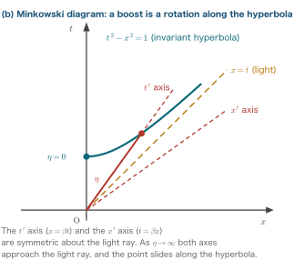
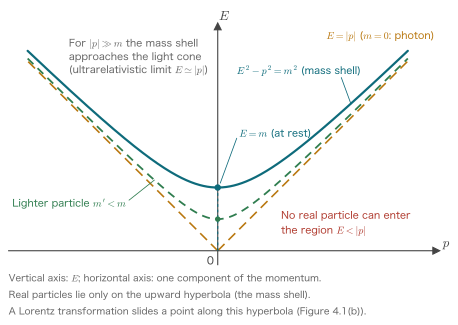

Chapter 4Relativistic Kinematics
In the previous chapters we saw that four forces act on elementary particles and that several conservation laws are imposed on them. But merely saying “there is a conservation law” tells us nothing about what will happen in the laboratory. To how many GeV must a proton be accelerated to produce an antiproton? At what angle do the two $\gamma$ rays emerging from the decay of a $\pi^0$ open apart? When a 14 MeV neutron strikes iron, what is the maximum energy an iron atom can receive as it is knocked out of the lattice? The toolkit for answering such questions numerically is relativistic kinematics.
This chapter is the most computational one in the book. It introduces not a single new physical law. All that appears is energy-momentum conservation in special relativity. It is nevertheless worth devoting a whole chapter to it, because a considerable part of the analysis of particle-physics experiments is determined by kinematics alone. Even without knowing anything about dynamics (the strength of the interactions, that is, the Feynman rules of Chapter 8 onward), kinematics alone settles “whether something can or cannot happen” and “in what range of energy it will appear.” The first line an experimentalist draws is always a kinematic line.
There is only one technical core: construct a quantity that takes the same value in every inertial frame, that is, a Lorentz invariant, evaluate it in a frame in which the calculation is easy, and thereby obtain the answer in the frame in which we want to measure. For example, the quantity built from the four-momenta $p_1^\mu, p_2^\mu$ of two particles,
$$ s \equiv (p_1+p_2)^\mu (p_1+p_2)_\mu $$takes the same value whether it is computed in the laboratory frame or in the center-of-mass frame. Computed in the laboratory frame, it becomes an expression in which the beam energy appears explicitly; computed in the center-of-mass frame, its meaning as “the total energy available” appears explicitly. Setting the two faces of the same number side by side gives the answer. The aim of this chapter is to make this one move second nature.
The connection to materials science is also the richest in this chapter. The maximum energy of the primary knock-on atom (PKA), the starting point of neutron irradiation damage, is nothing other than the kinematics of two-body elastic collisions. The reason Compton profile measurements can determine the electron momentum distribution is that the initial momentum of the electron enters the kinematics of Compton scattering linearly. The reason the Fermi surface can be seen in the angular correlation of positron annihilation is that the calculation of Section 4.5, in which a two-body decay is viewed “from a moving frame,” forms its skeleton (the actual angular correlation is further multiplied by a dynamical factor, the momentum density of the electron–positron pair). This is one of the few chapters in which the particle physicist’s toolbox can be carried straight into the materials laboratory.
- The Lorentz transformation in the standard configuration and its matrix representation, the description in terms of the rapidity $\eta$, and the fact that “rapidities add”
- Contravariant and covariant vectors under the metric $g^{\mu\nu}=\mathrm{diag}(1,-1,-1,-1)$, raising and lowering of indices, and the invariance of the inner product
- The definitions of the four-velocity $u^\mu$ and the four-momentum $p^\mu$, and the derivation of $p^\mu p_\mu = m^2$, that is, $E^2=\bm{p}^2+m^2$
- The notion of invariant mass, the kinematics of a massless particle (the photon), and the mutual conversion among $\beta,\gamma,E,p,T$
- The definitions of the Mandelstam variables $s,t,u$ and the proof of the identity $s+t+u=\sum_i m_i^2$; the bridge between the center-of-mass (CM) frame and the laboratory (lab) frame
- How to find the threshold energy of a reaction as the general formula $E_a^{\rm thr}=\dfrac{(\sum m_f)^2-m_a^2-m_b^2}{2m_b}$
- The general formula for the momentum in a two-body decay, $p=\sqrt{\lambda(M^2,m_1^2,m_2^2)}/(2M)$, and the Källén function $\lambda$; three-body decays and the Dalitz plot
- Applications: the threshold for antiproton production, the four-vector derivation of the Compton scattering formula, the photon energy in $\pi^0\to2\gamma$, and the difference between $\sqrt{s}$ for a collider and for a fixed target
- Connection to materials science: the maximum PKA energy in neutron irradiation $T_{\max}=\dfrac{4m_nM}{(m_n+M)^2}E_n$, the Compton profile, and the angular correlation of positron annihilation
4.1 Lorentz Transformations
4.1.1 Standard configuration
The starting point of special relativity consists of two postulates. First, the laws of physics take the same form in every inertial frame (the principle of relativity). Second, the speed of light $c$ in vacuum has the same value in every inertial frame (the invariance of the speed of light). From these two, the coordinate transformation between inertial frames is uniquely determined.
We will always consider the same setup. Take inertial frames $S$ and $S'$, and suppose that $S'$ moves with uniform velocity at speed $v$ in the positive direction of the $x$ axis relative to $S$. Their $y,z$ axes are parallel, and their origins coincide at $t=t'=0$. We call this setup the standard configuration.
Definition: Lorentz transformation in the standard configuration
In natural units $c=1$, with $\beta \equiv v$ and $\gamma \equiv (1-\beta^2)^{-1/2}$,
$$ \begin{equation} \begin{aligned} t' &= \gamma\,(t-\beta x), \\ x' &= \gamma\,(x-\beta t), \\ y' &= y, \\ z' &= z . \end{aligned} \label{eq:4-lt} \end{equation} $$The inverse transformation is obtained by setting $\beta\to-\beta$ (seen from $S$, $S'$ moves in the $+x$ direction, but seen from $S'$, $S$ moves in the $-x$ direction): $t=\gamma(t'+\beta x')$, $x=\gamma(x'+\beta t')$.
Here $\beta$ is the dimensionless velocity ($0\le\beta<1$) and $\gamma$ is the Lorentz factor ($\gamma\ge1$). To return to SI, read $t\to ct$ and $\beta\to v/c$.
The most important property of this transformation is that it leaves the following combination invariant.
Derivation: The invariant interval $t^2-x^2-y^2-z^2$
Step 1: Compute $t'^2-x'^2$. Substituting Eq. \eqref{eq:4-lt},
$$ t'^2 - x'^2 = \gamma^2(t-\beta x)^2 - \gamma^2(x-\beta t)^2 . $$Step 2: Expand the parentheses.
$$ \begin{aligned} (t-\beta x)^2 &= t^2 - 2\beta x t + \beta^2 x^2, \\ (x-\beta t)^2 &= x^2 - 2\beta x t + \beta^2 t^2 . \end{aligned} $$Upon taking the difference, the cross term $-2\beta xt$ cancels exactly. This is the essence:
$$ (t-\beta x)^2 - (x-\beta t)^2 = t^2(1-\beta^2) - x^2(1-\beta^2) = (1-\beta^2)(t^2-x^2). $$Step 3: Multiply by $\gamma^2$. Since $\gamma^2=(1-\beta^2)^{-1}$, the factor $(1-\beta^2)$ cancels neatly, and
$$ t'^2-x'^2 = t^2-x^2 . $$Step 4: Add the transverse directions. Since $y'=y$ and $z'=z$, we have $y'^2+z'^2=y^2+z^2$ unchanged. Therefore
holds. We call this quantity the invariant interval. ∎
Why look for “invariants”?
Recall rotations in three dimensions. When the coordinates $(x,y,z)$ are rotated, the individual components get thoroughly mixed, but the one combination $x^2+y^2+z^2$ does not change. That is why the notion of “distance” can be defined independently of the coordinate system.
The same is true of the Lorentz transformation. $t$ and $x$ get mixed, but $t^2-x^2$ does not. The only difference is a sign, and this can be regarded as “a rotation whose angle is not a real number but an imaginary one (or a hyperbolic angle).” We put this viewpoint into a formula in Eq. \eqref{eq:4-rapidity-matrix}.
The practical strategy of this chapter is then the following. Construct one invariant, evaluate it in a frame in which the calculation is easy (usually the center-of-mass frame), and equate it with its expression in the frame in which we want to measure (usually the laboratory frame). This removes the drudgery of applying the velocity-composition law again and again. We will see the power of this in the threshold calculation of Section 4.4.
4.1.2 Matrix representation
Since Eq. \eqref{eq:4-lt} is a linear transformation, it can be written with a matrix. Label the coordinates $x^\mu \equiv (t,x,y,z)$ ($\mu=0,1,2,3$), so that $x^0=t$, $x^1=x$, $x^2=y$, $x^3=z$. Then
$$ \begin{equation} x'^\mu = \sum_{\nu=0}^{3}\Lambda^\mu{}_\nu\, x^\nu \equiv \Lambda^\mu{}_\nu\, x^\nu , \qquad \Lambda = \begin{pmatrix} \gamma & -\gamma\beta & 0 & 0\\ -\gamma\beta & \gamma & 0 & 0\\ 0&0&1&0\\ 0&0&0&1 \end{pmatrix} \label{eq:4-lambda} \end{equation} $$Here we have used the Einstein summation convention: whenever the same index appears once as an upper index and once as a lower index, it is summed from $0$ to $3$. From now on we do not write the summation symbol $\sum$.
Caution: Index positions and conventions
The positions of the indices of $\Lambda^\mu{}_\nu$ (the upper $\mu$ is the row and the lower $\nu$ is the column) must not be written carelessly. $\Lambda^\mu{}_\nu$ and $\Lambda_\mu{}^\nu$ are different things, and the latter is the matrix of the inverse transformation (we will verify this in Section 4.2.2).
Also, some textbooks use $x^4=\ii ct$ instead of $x^0=ct$ and take the metric to be $\delta_{\mu\nu}$ (the imaginary-time formalism). It appears in old literature, but because it does not connect to general relativity we do not use it in this book. Like Griffiths, this book adopts $g^{\mu\nu}=\mathrm{diag}(1,-1,-1,-1)$ (the west-coast metric, $+---$). In particle physics $+---$ prevails, whereas in general relativity $-+++$ prevails. A single sign error flips the sign of every answer, so please make it a habit to check the convention at the beginning of any literature you read.
4.1.3 Rapidity — Lorentz transformations are hyperbolic rotations
Between $\gamma$ and $\gamma\beta$ there is the relation $\gamma^2-(\gamma\beta)^2 = \gamma^2(1-\beta^2)=1$. This has exactly the same form as the hyperbolic-function identity $\cosh^2\eta - \sinh^2\eta=1$. We therefore set the following.
Definition: Rapidity (also called the velocity parameter)
$$ \begin{equation} \beta = \tanh\eta \quad\Longleftrightarrow\quad \gamma = \cosh\eta, \quad \gamma\beta = \sinh\eta, \quad \eta = \mathrm{artanh}\,\beta = \frac12\ln\frac{1+\beta}{1-\beta} \label{eq:4-rapidity} \end{equation} $$We call $\eta$ the rapidity. For $\beta:0\to1$ we have $\eta:0\to\infty$. That is, rapidity has no upper limit.
Inserting this into Eq. \eqref{eq:4-lambda}, the Lorentz transformation becomes
Comparing with the two-dimensional rotation matrix $\begin{pmatrix}\cos\theta & -\sin\theta\\ \sin\theta&\cos\theta\end{pmatrix}$, we see that the trigonometric functions have merely been replaced by hyperbolic functions, and $\theta$ by $\eta$. A Lorentz transformation is a hyperbolic rotation (boost) in the $(t,x)$ plane: this is what the equation asserts.
Theorem: Rapidity is additive
If two boosts in the same direction are performed in succession, the rapidities simply add:
$$ \begin{equation} \Lambda(\eta_1)\,\Lambda(\eta_2) = \Lambda(\eta_1+\eta_2) \label{eq:4-rapidity-add} \end{equation} $$Derivation: Additivity and the velocity-composition law that follows from it
Step 1: Multiply the matrices. Writing only the $2\times2$ block, the $(0,0)$ component of
$$ \begin{pmatrix} \cosh\eta_1 & -\sinh\eta_1 \\ -\sinh\eta_1 & \cosh\eta_1 \end{pmatrix} \begin{pmatrix} \cosh\eta_2 & -\sinh\eta_2 \\ -\sinh\eta_2 & \cosh\eta_2 \end{pmatrix} $$is $\cosh\eta_1\cosh\eta_2 + \sinh\eta_1\sinh\eta_2$.
Step 2: Use the addition theorem. By the addition theorem of hyperbolic functions, $\cosh(a+b)=\cosh a\cosh b+\sinh a\sinh b$, this equals $\cosh(\eta_1+\eta_2)$. Similarly the $(0,1)$ component is
$$ -\cosh\eta_1\sinh\eta_2 - \sinh\eta_1\cosh\eta_2 = -\sinh(\eta_1+\eta_2) $$The $(1,0),(1,1)$ components work out in the same way, and in the end the product takes the form $\Lambda(\eta_1+\eta_2)$.
Step 3: Translate into velocities. Expanding $\beta_3=\tanh(\eta_1+\eta_2)$ with the addition theorem of the hyperbolic tangent gives
This is the famous velocity-composition law. Velocities do not add, but rapidities do. The true identity of the “hard-to-remember formula” known as the composition law was the addition theorem of the hyperbolic tangent.
Step 4: Confirm that the speed of light is not exceeded. However large $\eta_1,\eta_2$ may be, $\tanh(\eta_1+\eta_2)<1$. That is, no matter how many boosts are stacked, $\beta$ only approaches $1$ asymptotically and cannot exceed it. The fact that “one cannot exceed $c$” is explained in three lines by “the range of $\tanh$ is $(-1,1)$.” ∎
Physical Meaning: Why rapidity is used at accelerators
In high-energy experiments, for the $z$ component of the momentum (along the beam axis) one defines
$$ y \equiv \frac12\ln\frac{E+p_z}{E-p_z} $$as the longitudinal rapidity (by convention the symbol $y$ is used). With the transverse momentum $p_T=\sqrt{p_x^2+p_y^2}$ and the transverse mass $m_T\equiv\sqrt{m^2+p_T^2}$, we can write $E=m_T\cosh y$ and $p_z=m_T\sinh y$.
Under a boost along the beam axis, $y$ is merely shifted by a constant ($y\to y+\eta$). Therefore the “shape” of the distribution $\dd N/\dd y$ is the same whether seen in the center-of-mass frame or in the laboratory frame. This is decisively convenient when comparing the results of fixed-target and collider experiments. Distributions in $\theta$ or $p_z$ do not behave this way.
When the mass cannot be measured (or can be neglected), the pseudorapidity $\eta_{\rm ps}=-\ln\tan(\theta/2)$, which can be written with the angle alone, is used. For $m\ll p_T$, $y\to\eta_{\rm ps}$, that is, the two coincide (in the forward region $p_T\lesssim m$, the two differ significantly because of the difference between $m_T$ and $p_T$). This is why the coverage of the ATLAS and CMS detectors is quoted as, for example, “$|\eta|<2.5$.”

4.2 Four-Vectors
4.2.1 The metric and the inner product
We want to write the invariant in Eq. \eqref{eq:4-interval} as an “inner product.” To do so we introduce the metric tensor.
Definition: The metric tensor
$$ \begin{equation} g_{\mu\nu} = g^{\mu\nu} = \begin{pmatrix} 1 & 0 & 0 & 0\\ 0 & -1 & 0 & 0\\ 0 & 0 & -1 & 0\\ 0 & 0 & 0 & -1 \end{pmatrix} = \mathrm{diag}(1,-1,-1,-1) \label{eq:4-metric} \end{equation} $$We define the inner product of two four-vectors $a^\mu=(a^0,\bm{a})$ and $b^\mu=(b^0,\bm{b})$ as
In particular, $a\cdot a \equiv a^2 = (a^0)^2-\abs{\bm{a}}^2$ is called the norm (squared) of the four-vector.
Caution: $a^2$ is not necessarily positive
In three dimensions $\abs{\bm{a}}^2\ge0$, but in four dimensions there are three possible signs.
- $a^2>0$: timelike. The four-momentum of a massive particle; the interval between two points that can be causally connected.
- $a^2=0$: lightlike (null). The four-momentum of a photon; the interval between two points joined by light.
- $a^2<0$: spacelike. The interval between two simultaneous points; the momentum of the virtual particle exchanged in a scattering (this is the $t$ of §4.4).
A “negative squared norm” feels strange at first, but in Minkowski space this is the normal situation. When $a^2<0$, $\sqrt{a^2}$ is imaginary, so many references use the sign-reversed quantity $Q^2\equiv -a^2>0$. This is the $Q^2$ meant when one speaks of “data at $Q^2 = 10\ \mathrm{GeV^2}$” in a scattering experiment.
4.2.2 Contravariant and covariant vectors, raising and lowering indices
We call $a^\mu$, with an upper index, a contravariant vector, and $a_\mu$, with a lower index, a covariant vector. The two are connected by the metric.
Definition: Raising and lowering indices
$$ \begin{equation} a_\mu \equiv g_{\mu\nu}a^\nu, \qquad a^\mu = g^{\mu\nu}a_\nu \label{eq:4-raise-lower} \end{equation} $$Concretely, since $g$ is diagonal, only the signs of the spatial components change:
$$ a^\mu = (a^0,\ a^1,\ a^2,\ a^3) = (a^0,\ \bm{a}) \quad\Longleftrightarrow\quad a_\mu = (a^0,\ -a^1,\ -a^2,\ -a^3) = (a^0,\ -\bm{a}) . $$With this, the inner product can be written as $a\cdot b = a^\mu b_\mu = a_\mu b^\mu$, without writing the metric.
Math Note: $g_{\mu\nu}g^{\nu\lambda}=\delta_\mu^{\ \lambda}$
Raising and then lowering should return us to where we started. Indeed,
$$ g_{\mu\nu}g^{\nu\lambda} = \mathrm{diag}(1,-1,-1,-1)\cdot\mathrm{diag}(1,-1,-1,-1) = \mathrm{diag}(1,1,1,1) = \delta_\mu^{\ \lambda} $$(using $(-1)\times(-1)=+1$). That is, the metric is its own inverse matrix. In general relativity $g_{\mu\nu}$ is a complicated matrix that depends on the coordinates, and $g^{\mu\nu}$ is defined as its inverse matrix. In flat Minkowski space the two merely happen to coincide.
The trace of $g$ is $g^\mu{}_\mu = \delta^\mu{}_\mu = 4$ (the dimension of spacetime). This appears frequently in the trace calculations for the $\gamma$ matrices in Chapter 10.
Let us check the transformation law of a covariant vector. A contravariant vector transforms as $a'^\mu=\Lambda^\mu{}_\nu a^\nu$. How does a covariant vector transform?
Derivation: A covariant vector transforms with the inverse matrix
Step 1: Require the invariance of the inner product. Eq. \eqref{eq:4-interval} said that “$a\cdot a$ is invariant.” The same holds for two four-vectors, and we require $a'\cdot b' = a\cdot b$.
Step 2: Write the invariance in components. For $a'\cdot b' = a'^\mu b'_\mu$ to equal $a^\nu b_\nu$, with $a'^\mu = \Lambda^\mu{}_\nu a^\nu$, the components $b'_\mu$ must satisfy
$$ a'^\mu b'_\mu = \Lambda^\mu{}_\nu a^\nu b'_\mu \stackrel{!}{=} a^\nu b_\nu $$Since $a^\nu$ is arbitrary, comparing coefficients gives
$$ \Lambda^\mu{}_\nu\, b'_\mu = b_\nu . $$Step 3: Solve for $b'$. Writing the inverse matrix of $\Lambda$ as $(\Lambda^{-1})^\nu{}_\mu$, we get
$$ \begin{equation} b'_\mu = (\Lambda^{-1})^\nu{}_\mu\, b_\nu \label{eq:4-cov-transform} \end{equation} $$That is, a covariant vector transforms with the inverse of the matrix that transforms a contravariant vector. This is exactly why the upper–lower pair $a^\mu b_\mu$ is invariant, thanks to $\Lambda\Lambda^{-1}=1$.
Step 4: Check with a concrete form. In the standard configuration, $\Lambda^{-1}$ is the matrix with $\beta\to-\beta$. For example, for $b^\mu=(b^0,b^1,0,0)$ we have $b_\mu=(b^0,-b^1,0,0)$, and
$$ b'_0 = (\Lambda^{-1})^\nu{}_0\,b_\nu = \gamma\,b_0 + \gamma\beta\,b_1 = \gamma\,b^0 + \gamma\beta\,(-b^1) = \gamma\,(b^0-\beta b^1) $$(where we substituted $b_0=b^0$ and $b_1=-b^1$). This agrees with the contravariant component $b'^0=\gamma(b^0-\beta b^1)$ (as it must, since the time component has the same sign whether the index is up or down). The spatial component is $b'_1 = -b'^1 = -\gamma(b^1-\beta b^0)$, which has the opposite sign. ∎
Step 5: What $\Lambda_\mu{}^\nu$ really is. The matrix obtained by raising and lowering indices with the metric,
$$ \Lambda_\mu{}^\nu \equiv g_{\mu\alpha}\,\Lambda^\alpha{}_\beta\, g^{\beta\nu} $$when written out in the standard configuration, has the signs of its off-diagonal elements reversed (because $g$ only changes the signs of the spatial components). It coincides with the matrix with $\beta\to-\beta$, that is, with $(\Lambda^{-1})^\nu{}_\mu$. (In general this follows from the invariance of the inner product, $\Lambda^{\rm T}g\Lambda=g$, as $g\Lambda g=(\Lambda^{\rm T})^{-1}$.) This is the content of the statement in the caution of §4.1.2 that “$\Lambda^\mu{}_\nu$ and $\Lambda_\mu{}^\nu$ are different things.”
4.2.3 Representative four-vectors
Besides the spacetime point $x^\mu=(t,\bm{x})$, there are many quantities that obey the same transformation law. To be “a four-vector” means nothing more than “a four-component quantity that transforms by $\Lambda^\mu{}_\nu$ under a Lorentz transformation.”
| Name | Contravariant components $a^\mu$ | Norm $a\cdot a$ | Meaning and where it appears |
|---|---|---|---|
| Position | $x^\mu=(t,\bm{x})$ | $t^2-\abs{\bm{x}}^2$ | Invariant interval; determines the causal structure |
| Four-velocity | $u^\mu=\gamma(1,\bm{v})$ | $1$ | Always normalized (§4.2.4) |
| Four-momentum | $p^\mu=(E,\bm{p})$ | $m^2$ | The protagonist of this chapter; mass-shell condition |
| Wave number | $k^\mu=(\omega,\bm{k})$ | $m^2$ ($\hbar=1$) | de Broglie relation $p^\mu=\hbar k^\mu$; Doppler effect |
| Four-current | $j^\mu=(\rho,\bm{j})$ | — | Continuity equation $\partial_\mu j^\mu=0$; Chapter 10 |
| Electromagnetic potential | $A^\mu=(\phi,\bm{A})$ | — | Gauge transformation $A^\mu\to A^\mu+\partial^\mu\chi$; Chapters 10 and 13 |
| Differential operator | $\partial^\mu=\left(\dfrac{\partial}{\partial t},-\nabla\right)$ | $\partial^\mu\partial_\mu=\square$ | d’Alembertian; wave equation and Klein–Gordon equation |
Caution: Only for the differential operator do the indices look “reversed”
The last row of Table 4.1 will trip you up every time until you get used to it. The definition is most naturally given with a lower index:
$$ \partial_\mu \equiv \frac{\partial}{\partial x^\mu} = \left(\frac{\partial}{\partial t},\ \nabla\right), \qquad \partial^\mu = g^{\mu\nu}\partial_\nu = \left(\frac{\partial}{\partial t},\ -\nabla\right) $$Why is $\partial/\partial x^\mu$ a lower-index object? Writing out the chain rule makes it clear: $\dfrac{\partial}{\partial x'^\mu}=\dfrac{\partial x^\nu}{\partial x'^\mu}\dfrac{\partial}{\partial x^\nu}$, where the coefficient $\partial x^\nu/\partial x'^\mu$ is a component of $\Lambda^{-1}$. That is, $\partial/\partial x^\mu$ obeys the same transformation law as Eq. \eqref{eq:4-cov-transform}. That is why it is covariant (lower index).
As a result, $\partial_\mu\partial^\mu = \dfrac{\partial^2}{\partial t^2}-\nabla^2 = \square$, which is the Lorentz-invariant wave operator. The Klein–Gordon equation $(\square+m^2)\phi=0$ of Chapter 9 is written in this notation.
4.2.4 Four-velocity and four-momentum
We cannot simply carry the velocity $\bm{v}=\dd\bm{x}/\dd t$ of Newtonian mechanics over to four dimensions. Although $\dd x^\mu$ is a four-vector, $\dd t$ is not an invariant ($\dd x^\mu/\dd t$ is not a four-vector). So we prepare an invariant “time.”
Definition: Proper time and four-velocity
The time ticked off by a clock moving with the particle is called the proper time $\tau$. In the rest frame of the particle $\dd\bm{x}=0$, so the invariant interval is
$$ \begin{equation} \dd\tau^2 \equiv \dd x^\mu \dd x_\mu = \dd t^2 - \abs{\dd\bm{x}}^2 = \dd t^2\left(1-\abs{\bm{v}}^2\right) = \frac{\dd t^2}{\gamma^2} \quad\Longrightarrow\quad \dd t = \gamma\,\dd\tau \label{eq:4-propertime} \end{equation} $$(this is time dilation). Since $\tau$ is an invariant, dividing by it produces a four-vector:
$$ \begin{equation} u^\mu \equiv \frac{\dd x^\mu}{\dd\tau} = \frac{\dd t}{\dd\tau}\frac{\dd x^\mu}{\dd t} = \gamma\,(1,\ \bm{v}) \label{eq:4-fourvelocity} \end{equation} $$We call this the four-velocity.
Let us compute the norm of the four-velocity.
$$ u\cdot u = \gamma^2\left(1 - \abs{\bm{v}}^2\right) = \gamma^2\cdot\frac{1}{\gamma^2} = 1 . $$It is always $1$. It may seem odd that the “speed” is always $1$ (that is, the speed of light), but this is the mathematical content of the famous saying that “every object moves through spacetime at the speed of light, and an object at rest is traveling at the speed of light only in the time direction.” A fast object has merely turned part of its advance in the time direction toward the spatial directions.
Definition: Four-momentum
Multiplying by the mass $m$ (the rest mass; in this book we call it simply the “mass”),
That is, the relativistic energy and momentum are
$$ E = \gamma m, \qquad \bm{p} = \gamma m \bm{v}, \qquad \bm{v} = \frac{\bm{p}}{E}\quad(\text{that is, }\bm{\beta}=\bm{p}/E) $$The last relation, $\bm{\beta}=\bm{p}/E$, is the equation we use most often in this chapter, so it is worth memorizing.
Example: Practice with raising and lowering indices
For a four-momentum $p^\mu=(E,p_x,p_y,p_z)$ and another four-momentum $q^\mu=(E_q,q_x,q_y,q_z)$, verify the following.
(i) $p_\mu = (E,-p_x,-p_y,-p_z)$. We only multiply by the metric.
(ii) $p\cdot q = p^\mu q_\mu = E E_q - \bm{p}\cdot\bm{q}$. The time component stays a plain product, and the spatial components get a reversed sign.
(iii) $(p+q)^2 = p^2 + 2p\cdot q + q^2 = m_p^2 + m_q^2 + 2(EE_q-\bm{p}\cdot\bm{q})$. Since the inner product is commutative ($p\cdot q=q\cdot p$), the ordinary binomial expansion can be used as it is. This is the starting point of every calculation in this chapter.
(iv) $g^{\mu\nu}p_\mu p_\nu = p^\nu p_\nu = p^2$. Inserting the metric gives the same thing in the end.
(v) $\partial_\mu x^\mu = \dfrac{\partial t}{\partial t}+\nabla\cdot\bm{x} = 1+3 = 4$. The dimension of spacetime comes out.
4.3 Energy and Momentum
4.3.1 Derivation of $E^2=\bm{p}^2+m^2$
Derivation: The mass-shell condition
Step 1: Use the norm of the four-velocity. In §4.2.4 we showed that $u\cdot u=1$. Taking the norm of both sides of $p^\mu=mu^\mu$, we obtain
$$ p\cdot p = m^2\, u\cdot u = m^2 . $$Step 2: Write it out in components. Since $p^\mu=(E,\bm{p})$, Eq. \eqref{eq:4-dot} gives $p\cdot p = E^2-\abs{\bm{p}}^2$. Therefore
This relation is called the mass-shell condition (also the on-shell condition). In $(E,\bm{p})$ space, a real particle can lie only on this hyperboloid (the mass shell).
Step 3: Check by direct calculation. Substituting $E=\gamma m$ and $\abs{\bm{p}}=\gamma m\abs{\bm{v}}=\gamma m\beta$, we find
$$ E^2-\abs{\bm{p}}^2 = \gamma^2m^2 - \gamma^2m^2\beta^2 = \gamma^2m^2(1-\beta^2) = m^2 . $$The two results indeed agree. ∎
Step 4: Check the nonrelativistic limit. When $\abs{\bm{p}}\ll m$, expanding the square root gives
$$ E = m\sqrt{1+\frac{\abs{\bm{p}}^2}{m^2}} = m + \frac{\abs{\bm{p}}^2}{2m} - \frac{\abs{\bm{p}}^4}{8m^3}+\cdots $$The first term is the rest energy $mc^2$, the second is the classical kinetic energy $p^2/2m$, and the third is the first relativistic correction. We define the kinetic energy as $T\equiv E-m$ (the energy left after subtracting the rest energy).
Why do we speak of “invariant mass”?
The right-hand side $m^2$ of Eq. \eqref{eq:4-massshell} is the Lorentz-invariant norm of $p^\mu$. Therefore mass is the length of the four-momentum. No matter in which inertial frame we measure $E$ and $\bm{p}$, this combination takes the same value.
Older textbooks introduce the concept of a “relativistic mass” $m_{\rm rel}=\gamma m$ (a device invented because one wants to write $\bm{p}=m_{\rm rel}\bm{v}$). However, this merely pushes $\gamma$ into $m$, and it is harmful in that it gives the name “mass” to a quantity that is not Lorentz invariant. In modern particle physics, including this book, “mass” always means the invariant mass (rest mass) $m$. We do not use the phrase “mass increases with velocity.”
4.3.2 Invariant mass — systems of several particles also have a “mass”
Eq. \eqref{eq:4-massshell} is a formula for a single particle, but doing the same thing for a collection of particles yields the quantity most often used in experiments.
Definition: Invariant mass
For the sum of the four-momenta of $n$ particles, $P^\mu=\sum_{i=1}^n p_i^\mu$, the quantity
is called the invariant mass of the system. Since $P^\mu$ is a sum of four-vectors, it is itself a four-vector, and its norm is Lorentz invariant.
Physical Meaning: The invariant mass is the very tool of “particle hunting”
Suppose an unstable particle $X$ (mass $M$) decays as $X\to 1+2$. If we measure the momenta of the two final-state particles and compute Eq. \eqref{eq:4-invmass}, energy-momentum conservation gives $M_{\rm inv}=M$. That is, the mass of the parent particle can be reconstructed from the decay products.
In an experiment, one picks up every pair of particles that emerged from a collision, computes $M_{\rm inv}$, and draws a histogram. Unrelated combinations form a smooth background, but pairs that truly came from $X$ form a peak at $M_{\rm inv}=M$. The discovery of the Higgs boson in 2012 was also reported as a peak at $125\ \mathrm{GeV}$ appearing in the invariant-mass distributions of $\gamma\gamma$ pairs and $4\ell$ pairs.
Expanding for the case of two particles gives a formula that is convenient in practice:
$$ M_{\rm inv}^2 = (p_1+p_2)^2 = m_1^2+m_2^2+2(E_1E_2 - \bm{p}_1\cdot\bm{p}_2) = m_1^2+m_2^2+2(E_1E_2 - \abs{\bm{p}_1}\abs{\bm{p}_2}\cos\theta_{12}) $$In particular, if both are massless (two photons), then $M_{\rm inv}^2 = 2E_1E_2(1-\cos\theta_{12})$. We use this for $\pi^0\to2\gamma$ in §4.6(c).
4.3.3 Massless particles
Substituting $m=0$ into Eq. \eqref{eq:4-massshell} gives $E=\abs{\bm{p}}$. Also, from $\bm{\beta}=\bm{p}/E$ we get $\abs{\bm{\beta}}=1$; that is, the particle always moves at the speed of light. Conversely, if we take $m\to0$ and $\beta\to1$ ($\gamma\to\infty$) in the expressions $E=\gamma m$ and $\bm{p}=\gamma m\bm{v}$, we get the indeterminate form $0\times\infty$, and finite $E,\bm{p}$ remain.
Caution: A massless particle has no “rest frame”
A particle with $\beta=1$ keeps $\beta=1$ under any Lorentz transformation (set $\beta_1=1$ in Eq. \eqref{eq:4-velocity-add} and we get $\beta_3=1$). Therefore there is no such thing as the rest frame of the photon. The thought experiment “what would the world look like if we rode on a photon?” has no meaning within special relativity.
What we can do instead is to take the limit $\eta\to+\infty$, that is, the limit of boosting in the direction of chasing the photon, and make the photon energy arbitrarily small. Indeed, if a photon traveling in the $+x$ direction is boosted in the $+x$ direction with rapidity $\eta$, the photon energy transforms as $E'=E\,\ee^{-\eta}$ (Exercise 4.2), so the more we chase it (the larger we make $\eta>0$), the more it is redshifted, and $E'\to0$. Conversely, for $\eta\to-\infty$ (the direction of heading straight toward the photon), we get a blueshift with $E'\to\infty$. This is the relativistic Doppler effect. However, no matter how far we boost, $E'$ never becomes exactly $0$, and $\beta=1$ does not change either.
4.3.4 Conversions among $\beta$, $\gamma$, $E$, $p$, and $T$
In practice one goes back and forth among these five quantities. We list the conversion formulas.
| Desired quantity | From $\beta$ | From $T$ | From $p$ |
|---|---|---|---|
| $\gamma$ | $(1-\beta^2)^{-1/2}$ | $1+T/m$ | $\sqrt{1+(p/m)^2}$ |
| $\beta$ | — | $\dfrac{\sqrt{T(T+2m)}}{T+m}$ | $\dfrac{p}{\sqrt{p^2+m^2}}$ |
| $E$ | $\dfrac{m}{\sqrt{1-\beta^2}}$ | $T+m$ | $\sqrt{p^2+m^2}$ |
| $p$ | $\dfrac{m\beta}{\sqrt{1-\beta^2}}$ | $\sqrt{T(T+2m)}$ | — |
| $T$ | $m\left(\dfrac{1}{\sqrt{1-\beta^2}}-1\right)$ | — | $\sqrt{p^2+m^2}-m$ |
It is convenient to remember $p=\sqrt{T(T+2m)}$ in particular. In the nonrelativistic limit ($T\ll m$) it becomes the familiar formula $p\simeq\sqrt{2mT}$, and in the ultrarelativistic limit ($T\gg m$) it becomes $p\simeq T\simeq E$.
| Particle and kinetic energy $T$ | $\gamma$ | $\beta$ | $p$ | $\lambda$ | Application |
|---|---|---|---|---|---|
| Neutron $25\ \mathrm{meV}$ (thermal neutron) | $1+2.7\times10^{-11}$ | $7.29\times10^{-6}$ | $6.85\ \mathrm{keV}$ | $1.81\ \text{Å}$ | Neutron diffraction, inelastic scattering |
| Electron $5\ \mathrm{eV}$ (near the Fermi surface) | $1+9.8\times10^{-6}$ | $4.42\times10^{-3}$ | $2.26\ \mathrm{keV}$ | $5.48\ \text{Å}$ | Conduction electrons in metals |
| Electron $100\ \mathrm{keV}$ | $1.1957$ | $0.5482$ | $335\ \mathrm{keV}$ | $3.70\ \mathrm{pm}$ | Low-accelerating-voltage TEM and SEM |
| Electron $200\ \mathrm{keV}$ | $1.3914$ | $0.6953$ | $494\ \mathrm{keV}$ | $2.51\ \mathrm{pm}$ | General-purpose TEM (atomic resolution) |
| Electron $300\ \mathrm{keV}$ | $1.5871$ | $0.7765$ | $630\ \mathrm{keV}$ | $1.97\ \mathrm{pm}$ | High-resolution TEM |
| Neutron $14.1\ \mathrm{MeV}$ (D–T fusion) | $1.01501$ | $0.17132$ | $163\ \mathrm{MeV}$ | $7.59\ \mathrm{fm}$ | Irradiation damage in fusion reactors |
| Muon $3\ \mathrm{GeV}$ (cosmic ray) | $29.39$ | $0.99942$ | $3.10\ \mathrm{GeV}$ | $0.399\ \mathrm{fm}$ | Muography, $\mu$SR |
| Proton $7\ \mathrm{TeV}$ (LHC) | $7460$ | $1-9.0\times10^{-9}$ | $7.00\ \mathrm{TeV}$ | $1.8\times10^{-4}\ \mathrm{fm}$ | Energy frontier |
Connection to Materials Science: TEM accelerating voltage and relativistic corrections
The electron rows of Table 4.3 should contain familiar numbers for anyone who uses a transmission electron microscope (TEM). In a $200\ \mathrm{kV}$ TEM, $\lambda=2.51\ \mathrm{pm}$, and this determines the theoretical limit of resolution (in practice spherical aberration matters, so the resolution stays at around $200\ \mathrm{pm}$ for instruments without an aberration corrector, and at only about $50\text{--}80\ \mathrm{pm}$ even for aberration-corrected instruments).
Let us confirm here that the relativistic correction matters. If we use the nonrelativistic $p=\sqrt{2m_eT}$, then for $T=200\ \mathrm{keV}$
$$ p_{\rm NR} = \sqrt{2\times0.511\times0.200}\ \mathrm{MeV} = 0.452\ \mathrm{MeV} $$and the wavelength is $\lambda_{\rm NR}=1239.8/0.452\ \mathrm{fm}=2.74\ \mathrm{pm}$. This is as much as 9% longer than the correct value of $2.51\ \mathrm{pm}$. An electron at $200\ \mathrm{kV}$ travels at $\beta=0.70$, that is, at 70% of the speed of light, so the nonrelativistic formula is out of the question. In TEM textbooks the wavelength formula is written in the form “with a correction term”,
$$ \lambda = \frac{2\pi\hbar}{\sqrt{2m_eeV\left(1+\dfrac{eV}{2m_ec^2}\right)}} $$and this is precisely a rewriting of $p=\sqrt{T(T+2m)}=\sqrt{2mT}\sqrt{1+T/2m}$. A formula of particle physics is, as it stands, a working formula in the electron microscope laboratory.
Let us also look at the neutron rows. The fact that the thermal-neutron wavelength $\lambda=1.81\ \text{Å}$ is comparable to typical interatomic distances is why structure analysis is possible by neutron diffraction. And this neutron has $\beta=7\times10^{-6}$ and is completely nonrelativistic. On the other hand, a $14.1\ \mathrm{MeV}$ neutron from a fusion reactor has $\beta=0.17$, and the relativistic correction amounts to a little under $1\ \%$ (we quantify this in §4.6(e)). Even the same “neutron” shows an entirely different face to materials.

4.4 Collisions
4.4.1 Review of classical collisions — what is conserved and what is not
Before turning to relativity, let us organize the classical collisions learned in high school. When two bodies collide, momentum is always conserved. Kinetic energy, on the other hand, is not necessarily conserved. We therefore classify collisions as follows.
| Type | Feature in classical mechanics | Feature in relativity | Examples |
|---|---|---|---|
| Elastic collision | Kinetic energy is conserved | Neither the particle species nor the masses change. $\sum T$ is conserved | $e^-p\to e^-p$, elastic scattering of neutrons |
| Inelastic collision | Kinetic energy decreases (into internal degrees of freedom) | The sum of the masses increases. $\sum T$ decreases by exactly the amount by which $\sum m$ increases | $pp\to pp\pi^0$, inelastic scattering of neutrons |
| Explosive collision | Kinetic energy increases | The sum of the masses decreases. Binding energy and rest mass are converted into motion | Nuclear fission, $\pi^0\to2\gamma$ |
Physical Meaning: In relativity, “conservation of mass” disappears
In a relativistic collision, what is conserved kinematically is the four quantities energy $E$ and momentum $\bm{p}$, that is, the four-momentum $p^\mu$, while the sum of the masses $\sum m_i$ is not conserved. (Quantities such as electric charge, baryon number, lepton number, and angular momentum are also conserved, but they belong to the internal symmetries discussed in Chapter 3 and do not fall within the kinematic framework used in this chapter.) The Q value of a nuclear reaction, the fact that new particles can be created in an accelerator, and the fact that a $\pi^0$ disappears into light all come down to this single point.
In classical mechanics, “conservation of mass” and “conservation of energy” were separate laws because, in $E=mc^2$, the part $mc^2$ was an immovable constant. Once we enter the regime where $mc^2$ can change, the two merge into one law. Among the list of conservation laws we saw in Chapter 3, this is the deepest rewriting.
Note, however, that although $\sum m_i$ is not conserved, the invariant mass of the whole system, $M_{\rm inv}=\sqrt{P\cdot P}$, is conserved (naturally, since $P^\mu$ is conserved). The $s$ of the next subsection is precisely this quantity.
4.4.2 Mandelstam variables
Consider a $2\to2$ reaction $1+2\to3+4$. There are four four-momenta $p_1,p_2,p_3,p_4$, but they are constrained by the conservation law $p_1+p_2=p_3+p_4$ and by the mass-shell condition $p_i^2=m_i^2$ for each particle. In the end there are only two independent Lorentz invariants (Exercise 4.4). How should we choose those two? Traditionally, one defines three symmetric quantities and later ties them together with a single relation.
Definition: Mandelstam variables
For the reaction $1+2\to3+4$, the quantities
are called the Mandelstam variables (S. Mandelstam, 1958). All of them are Lorentz invariant.
- $s$: the square of the total energy. $\sqrt{s}$ equals the total energy in the center-of-mass frame (§4.4.3).
- $t$: the square of the momentum transfer when particle 1 becomes particle 3. It is directly tied to the scattering angle.
- $u$: the square of the momentum transfer when particle 1 becomes particle 4. It corresponds to $t$ with the two final-state particles interchanged.
Theorem: $s+t+u=\sum_i m_i^2$
The sum of the three Mandelstam variables equals the sum of the squared masses of the four particles:
Therefore only two of them are independent: if we choose $s$ and $t$, then $u$ is determined automatically.
Derivation: Proof of $s+t+u=\sum m_i^2$
Step 1: Expand the definitions directly.
$$ \begin{aligned} s &= (p_1+p_2)^2 = p_1^2 + p_2^2 + 2\,p_1\!\cdot\! p_2,\\ t &= (p_1-p_3)^2 = p_1^2 + p_3^2 - 2\,p_1\!\cdot\! p_3,\\ u &= (p_1-p_4)^2 = p_1^2 + p_4^2 - 2\,p_1\!\cdot\! p_4 . \end{aligned} $$Step 2: Add the three. Using $p_i^2=m_i^2$, we get
$$ s+t+u = 3m_1^2 + m_2^2+m_3^2+m_4^2 + 2\,p_1\!\cdot\!\big(p_2 - p_3 - p_4\big). $$So far this is mere rearrangement. The key is the content of the last parenthesis.
Step 3: Substitute the conservation law. From $p_1+p_2=p_3+p_4$ we have $p_3+p_4 = p_1+p_2$, so
$$ p_2 - p_3 - p_4 = p_2 - (p_1+p_2) = -p_1 . $$Step 4: Substitute and simplify.
$$ s+t+u = 3m_1^2 + m_2^2+m_3^2+m_4^2 + 2\,p_1\!\cdot\!(-p_1) = 3m_1^2 + m_2^2+m_3^2+m_4^2 - 2m_1^2 $$that is,
$$ s+t+u = m_1^2+m_2^2+m_3^2+m_4^2 . \qquad\blacksquare $$It is pleasing that, although we started by singling out $p_1$, the result is completely symmetric in the four particles. This reflects the fact that the definitions of the three variables were symmetric to begin with.
Math Note: The Mandelstam plane — drawing three variables on a plane
The constraint $s+t+u=$ const. represents a single plane in the three-dimensional space $(s,t,u)$. The Mandelstam variables can therefore be drawn as a point on a two-dimensional plane.
A convenient way to draw them uses a fact of elementary geometry: for a point inside an equilateral triangle, the sum of the distances to the three sides is constant (Viviani’s theorem). Take the three sides of an equilateral triangle as the lines $s=0$, $t=0$, and $u=0$, and make the signed distances from a point to each side proportional to $s,t,u$; then $s+t+u=\sum m_i^2$ is satisfied automatically. The figure drawn this way is the Mandelstam plane of Figure 4.3.
The usefulness of this figure is that it lets us see that a single analytic function (the scattering amplitude) describes three physical processes. The same amplitude $\mathcal{M}(s,t,u)$ represents $1+2\to3+4$ in the region where $s$ is large, $1+\bar3\to\bar2+4$ in the region where $t$ is large, and $1+\bar4\to\bar2+3$ in the region where $u$ is large. This is called crossing symmetry, and it reappears in Chapter 10, where we will see that the amplitudes for Compton scattering and pair annihilation are different regions of the same expression.
4.4.3 The center-of-mass (CM) frame and the laboratory (lab) frame
From here on it is practical work. We compute the same invariant $s$ in two coordinate frames and equate the results.
Definition: Two reference frames
- The center-of-mass frame (center-of-momentum frame, CM frame): the frame in which the total momentum vanishes, $\sum_i\bm{p}_i^*=\bm{0}$. Quantities in the CM frame are marked with $*$. Strictly it is the “center-of-momentum frame,” but by convention it is called the center-of-mass frame.
- The laboratory frame (lab frame): the frame in which the target particle is at rest, $\bm{p}_2=\bm{0}$. This is the setup of fixed-target experiments.
Derivation: The two faces of $s$
Step 1: Compute in the CM frame. By definition $\bm{p}_1^*+\bm{p}_2^*=\bm{0}$, so
$$ s = (p_1^*+p_2^*)^2 = \big(E_1^*+E_2^*,\ \bm{0}\big)^2 = (E_1^*+E_2^*)^2 \equiv E_{\rm CM}^2 . $$that is,
This is the basis for calling $\sqrt{s}$ the center-of-mass energy. The energy available for creating a new particle is this $\sqrt{s}$.
Step 2: Compute in the lab frame. Since target 2 is at rest, $p_2^\mu=(m_2,\bm{0})$, and the incident particle 1 has $p_1^\mu=(E_1,\bm{p}_1)$. From the definition of the inner product, Eq. \eqref{eq:4-dot}, $p_1\cdot p_2 = E_1m_2 - \bm{p}_1\cdot\bm{0} = m_2E_1$. Therefore
Step 3: Equate the two. Since $s$ is an invariant, they are the same number:
$$ E_{\rm CM}^2 = m_1^2+m_2^2+2m_2E_1 . $$Step 4: Look at the high-energy limit. When $E_1\gg m_1,m_2$, the third term dominates, and
$$ \begin{equation} E_{\rm CM} = \sqrt{s} \simeq \sqrt{2m_2E_1}\qquad(\text{fixed target}) \label{eq:4-fixed-target} \end{equation} $$The center-of-mass energy is proportional only to the square root of the incident energy. Even if we quadruple the accelerator energy, the available energy only doubles. This is the motivation for the colliders discussed in §4.6(d). ∎
The energy and momentum of each particle in the CM frame can also be written in terms of $s$ alone.
Derivation: Energies and momenta in the CM frame
Step 1: Extract $E_1^*$ from the invariants. In the CM frame $p_1^*+p_2^*=(\sqrt{s},\bm{0})$, so taking the inner product of this with $p_1^*$ gives
$$ p_1^*\cdot(p_1^*+p_2^*) = E_1^*\sqrt{s} . $$On the other hand, the left-hand side can also be written in invariant form as $p_1^2+p_1\cdot p_2$. Using $p_1\cdot p_2 = \frac12(s-m_1^2-m_2^2)$ (a rearrangement of Eq. \eqref{eq:4-s-lab}), we get
$$ E_1^*\sqrt{s} = m_1^2 + \frac{s-m_1^2-m_2^2}{2} = \frac{s+m_1^2-m_2^2}{2} $$that is,
$$ \begin{equation} E_1^* = \frac{s+m_1^2-m_2^2}{2\sqrt{s}}, \qquad E_2^* = \frac{s+m_2^2-m_1^2}{2\sqrt{s}} \label{eq:4-cm-energies} \end{equation} $$(Verify that the sum is $\sqrt{s}$.)
Step 2: Obtain the momentum from the mass-shell condition. Substitute into $\abs{\bm{p}_1^*}^2 = (E_1^*)^2-m_1^2$. The numerator is
$$ (s+m_1^2-m_2^2)^2 - 4sm_1^2 . $$Expanding and simplifying this (or applying $A^2-B^2=(A-B)(A+B)$ with $A=s+m_1^2-m_2^2$, $B=2\sqrt{s}\,m_1$), we obtain
$$ \big[s-(m_1+m_2)^2\big]\big[s-(m_1-m_2)^2\big] \equiv \lambda(s,m_1^2,m_2^2) $$We will name this function the Källén function in the next section. The conclusion is
In the CM frame the two particles have momenta of equal magnitude (in opposite directions). This is obvious, but it is the greatest advantage of using the CM frame. ∎
4.4.4 $t$ and the scattering angle
Let us look at the meaning of $t$ in the CM frame. Consider elastic scattering ($m_3=m_1$, $m_4=m_2$). Then $\abs{\bm{p}_3^*}=\abs{\bm{p}_1^*}\equiv p^*$ and $E_3^*=E_1^*$, so
$$ t = (p_1-p_3)^2 = 2m_1^2 - 2p_1\!\cdot\! p_3 = 2m_1^2 - 2\big(E_1^{*2} - \abs{\bm{p}^*}^2\cos\theta^*\big) $$Using $E_1^{*2}-\abs{\bm{p}^*}^2=m_1^2$ and simplifying, we obtain
$$ \begin{equation} t = -2\abs{\bm{p}^*}^2\,(1-\cos\theta^*) = -4\abs{\bm{p}^*}^2\sin^2\frac{\theta^*}{2} \label{eq:4-t-angle} \end{equation} $$Here $\theta^*$ is the scattering angle in the CM frame. That is, $t\le0$; $t=0$ for forward scattering ($\theta^*=0$), and for backscattering ($\theta^*=\pi$) $t=-4\abs{\bm{p}^*}^2$ is the minimum value. Similarly, for general elastic scattering $u=(p_1-p_4)^2=m_1^2+m_2^2-2E_1^*E_2^*-2\abs{\bm{p}^*}^2\cos\theta^*$, and in particular for equal masses ($m_1=m_2\equiv m$) we have $m_1^2+m_2^2-2E_1^*E_2^*=-2\abs{\bm{p}^*}^2$, which reduces to $u=-2\abs{\bm{p}^*}^2(1+\cos\theta^*)$. In this case we indeed have
$$ s+t+u = 4(m^2+\abs{\bm{p}^*}^2) - 4\abs{\bm{p}^*}^2 = 4m^2 = \sum_i m_i^2 $$(for equal-mass elastic scattering). This serves as a check of the theorem.
Connection to Materials Science: The $(Q,\omega)$ plane and the Mandelstam variables
Those who use inelastic neutron scattering or inelastic X-ray scattering (IXS) are surely accustomed to plotting their measurements on a plane of the “scattering vector $\bm{Q}$” and the “energy transfer $\hbar\omega$.” For example, when measuring a phonon dispersion, one scans $(\bm{Q},\omega)$ space and follows the peaks.
This plane can be written in the same language as the Mandelstam variables. Let the incident neutron be $p_1$, the target $p_2$, and the scattered neutron $p_3$; then the four-vector of the momentum transfer is $q^\mu \equiv p_1^\mu - p_3^\mu = (\hbar\omega,\ \hbar\bm{Q})$, and
$$ t = q^\mu q_\mu = (\hbar\omega)^2 - (\hbar c Q)^2 $$holds. In nonrelativistic scattering $\hbar\omega \ll \hbar cQ$ (the energy transfer is of order meV, and the momentum transfer is of order $\text{Å}^{-1}$, that is, $\hbar cQ \sim \mathrm{keV}$), so $t\simeq -(\hbar cQ)^2$; in other words, the $Q^2$ used in scattering in condensed matter corresponds to the nonrelativistic limit of $-t$ in particle physics.
We should note, however, that the $(\bm{Q},\omega)$ plane is not spanned by $t$ alone. Because the target (the crystal) singles out a rest frame, the independent invariants here are two: $t=(\hbar\omega)^2-(\hbar cQ)^2\simeq-(\hbar cQ)^2$ and $\nu\equiv p_2\!\cdot\! q/M$ (which in the target rest frame is simply $\hbar\omega$). The invariant mass of the final-state target system is $W^2=(p_2+q)^2=M^2+2M\nu+t$. For elastic scattering ($W=M$), $\omega$ and $Q$ cease to be independent; but in inelastic scattering that excites phonons, the target has internal excitations, so $W\ne M$, and $Q$ and $\omega$ can be scanned independently while the incident energy ($s$) is held fixed. This is why the $(\bm{Q},\omega)$ plane is two-dimensional, and it is the same structure as the variables $(Q^2,\nu)$ of deep inelastic scattering in Section 11.2.5 of Chapter 11. The only difference is whether what is being broken up is a proton or the lattice of a crystal.
Another point to note is that the dynamic structure factor $S(\bm{Q},\omega)$ is not the scattering amplitude $\mathcal{M}$ itself. $S(\bm{Q},\omega)$ is a response function obtained by summing $\abs{\mathcal{M}}^2$ over the final states of the target, and what corresponds to it on the particle-physics side is not the amplitude but the DIS structure functions $W_1,W_2$ (Section 11.2.6 of Chapter 11). Read this way, one sees that the theory of neutron scattering and the theory of particle scattering have the same skeleton. Indeed, both are written with the same structure, “cross section in the Born approximation $\propto \abs{\mathcal{M}}^2$” (compare $S(\bm{q},\omega)$ in Chapter 12 of “Introduction to Linear Response Theory” with the cross-section formulas in Appendix B of this book). The difference is that in condensed matter the target is “a collection of infinitely many atoms,” so a structure factor multiplies $\mathcal{M}$.
4.4.5 Threshold energy
For a reaction $a+b\to 1+2+\cdots+n$ to occur, there must be enough energy. We now put the meaning of “enough” into a formula.
Theorem: The threshold condition
A necessary condition for the reaction to occur is
that is, the total energy in the center-of-mass frame is at least the sum of the masses of the final-state particles. When equality holds, all the final-state particles are at rest in the CM frame (and in the lab frame they move together as one group with the same velocity).
Derivation: The general formula for the threshold energy
Step 1: Write down the condition. The invariant mass of the whole final state is $\sqrt{s}$ (conservation law). On the other hand, the invariant mass of a system of $n$ particles takes its minimum value $\sum_f m_f$ when all the particles are at rest (Exercise 4.3). Hence we obtain Eq. \eqref{eq:4-threshold-cond}.
Step 2: Substitute the lab-frame expression. In a fixed-target experiment with target $b$ at rest, Eq. \eqref{eq:4-s-lab} gives $s=m_a^2+m_b^2+2m_bE_a$. At threshold this equals $\left(\sum_f m_f\right)^2$:
$$ m_a^2+m_b^2+2m_bE_a^{\rm thr} = \Big(\sum_f m_f\Big)^2 . $$Step 3: Solve for $E_a$.
This is the threshold (total energy) for a fixed-target experiment. If we want it as a kinetic energy, we set $T_a^{\rm thr}=E_a^{\rm thr}-m_a$.
Step 4: The collider case. For two head-on beams (each with energy $E$, masses neglected), $s=(2E)^2$, so the threshold is simply
$$ 2E \ge \sum_f m_f $$No square root appears. We will see in §4.6(d) that this difference is decisive. ∎
4.5 Decays
4.5.1 Kinematics of two-body decay
Suppose a particle of mass $M$ at rest decays into two particles of masses $m_1$ and $m_2$ ($M\to1+2$). In the rest frame of the parent particle, momentum conservation implies that the two particles have momenta of equal magnitude in opposite directions. Combining energy conservation with the mass-shell condition fixes that magnitude. In a two-body decay, the energies and the momentum magnitudes of the products are completely determined. The only remaining degrees of freedom are the emission direction (two degrees of freedom on the sphere).
Derivation: Momentum in two-body decay
Step 1: Write down the conservation laws. In the rest frame of the parent particle (which is also the CM frame),
$$ M = E_1+E_2, \qquad \bm{p}_1 + \bm{p}_2 = \bm{0}\ \Rightarrow\ \abs{\bm{p}_1}=\abs{\bm{p}_2}\equiv p . $$Step 2: Write the energies in terms of $p$. From the mass-shell condition,
$$ \sqrt{p^2+m_1^2} + \sqrt{p^2+m_2^2} = M . $$We need to solve this for $p$. Since there are two square roots, we move one to the other side and square.
Step 3: First squaring.
$$ \sqrt{p^2+m_1^2} = M - \sqrt{p^2+m_2^2} $$Squaring both sides gives
$$ p^2+m_1^2 = M^2 - 2M\sqrt{p^2+m_2^2} + p^2+m_2^2 . $$The key point is that $p^2$ cancels on both sides. Rearranging,
$$ 2M\sqrt{p^2+m_2^2} = M^2 - m_1^2 + m_2^2 . $$As a by-product, we can read off the energies of the products immediately:
(This is the same form as Eq. \eqref{eq:4-cm-energies} with $s\to M^2$. Of course it is: both give “the one-particle energy in the center-of-mass frame.”)
Step 4: Second squaring. From $E_2=\sqrt{p^2+m_2^2}$,
$$ p^2 = E_2^2 - m_2^2 = \left(\frac{M^2+m_2^2-m_1^2}{2M}\right)^2 - m_2^2 = \frac{(M^2+m_2^2-m_1^2)^2 - 4M^2m_2^2}{4M^2} . $$Step 5: Factor the numerator. Applying $A^2-B^2=(A-B)(A+B)$ with $A=M^2+m_2^2-m_1^2$ and $B=2Mm_2$, we get
$$ \begin{aligned} A-B &= M^2 - 2Mm_2 + m_2^2 - m_1^2 = (M-m_2)^2 - m_1^2 = (M-m_2-m_1)(M-m_2+m_1),\\ A+B &= (M+m_2)^2 - m_1^2 = (M+m_2-m_1)(M+m_2+m_1). \end{aligned} $$Regrouping the four factors,
$$ (A-B)(A+B) = \big[M^2-(m_1+m_2)^2\big]\big[M^2-(m_1-m_2)^2\big] . $$Step 6: Conclusion. Writing this combination as $\lambda(M^2,m_1^2,m_2^2)$, we obtain
∎ From the appearance of the factor $M^2-(m_1+m_2)^2$ we can also read off a consequence of energy conservation: if $\abs{m_1-m_2}<M<m_1+m_2$, then $p^2<0$ and the decay is impossible. (For $M\le\abs{m_1-m_2}$, both factors become negative and $p^2>0$ again, but in that case the decay is impossible for another reason, as stated in the definition box below.)
Definition: Källén function (also called the triangle function)
$$ \begin{equation} \lambda(x,y,z) \equiv x^2+y^2+z^2-2xy-2yz-2zx \label{eq:4-kallen} \end{equation} $$Besides the defining expression, the following two rewritings (the factored form, and the form organized in powers of $x$) are convenient and worth remembering:
$$ \lambda(x,y,z) = \big[x-(\sqrt y+\sqrt z)^2\big]\big[x-(\sqrt y-\sqrt z)^2\big] = x^2 - 2x(y+z) + (y-z)^2 . $$$\lambda$ is completely symmetric in its three variables (obvious from the defining expression). This corresponds to the fact that the decay $M\to1+2$ and the production $1+2\to M$ are described by the same formula.
The name “triangle function” comes from the geometric meaning that $\lambda<0$ when a triangle with sides $\sqrt x,\sqrt y,\sqrt z$ can be formed, and $\lambda>0$ when it cannot (the relation to Heron’s formula; see Exercise 4.5). Physically, among the region $\lambda\ge0$, the branch $M\ge m_1+m_2$ is the condition under which “the decay is kinematically allowed.” $\lambda$ is also $\ge0$ for $M\le\abs{m_1-m_2}$ (when one of the daughters is heavier than the parent), but there Eq. \eqref{eq:4-decay-energies} gives $E_1>M$ and cannot satisfy the energy conservation $E_1+E_2=M$, so it is not a physical decay.
| Decay | $M$ | $m_1$ | $m_2$ | $p$ | Remarks |
|---|---|---|---|---|---|
| $\pi^+\to\mu^+\nu_\mu$ | $139.570$ MeV | $105.658$ MeV | $\approx0$ | $29.79$ MeV | $T_\mu=4.12$ MeV. The $\mu$ momentum is monochromatic |
| $\pi^0\to\gamma\gamma$ | $134.977$ MeV | $0$ | $0$ | $67.49$ MeV | $p=M/2$. Section 4.6(c) |
| $K^+\to\mu^+\nu_\mu$ | $493.677$ MeV | $105.658$ MeV | $\approx0$ | $235.5$ MeV | Branching ratio $63.6\ \%$ |
| $\Lambda\to p\,\pi^-$ | $1115.68$ MeV | $938.272$ MeV | $139.570$ MeV | $100.6$ MeV | Branching ratio $63.9\ \%$. Strangeness violation |
| $Z\to e^+e^-$ | $91.188$ GeV | $0.511$ MeV | $0.511$ MeV | $45.59$ GeV | $p\simeq M/2$. Calibration line at LEP |
| $H\to\gamma\gamma$ | $125.25$ GeV | $0$ | $0$ | $62.63$ GeV | Discovery channel in 2012 |
| $e^+e^-\to\gamma\gamma$ (annihilation at rest) | $1.022$ MeV | $0$ | $0$ | $511$ keV | Positron annihilation. See the connection box below |
4.5.2 Decay in flight — boosting to the laboratory frame
In an actual experiment, the parent particle is not at rest. Suppose the parent is flying in the $z$ direction with rapidity $\eta$ (that is, velocity $\beta_p=\tanh\eta$). A daughter particle with $(E^*,p^*\cos\theta^*,\ p^*\sin\theta^*)$ in the CM frame has, in the lab frame,
$$ \begin{equation} E = \gamma_p\big(E^* + \beta_p\, p^*\cos\theta^*\big), \qquad p_z = \gamma_p\big(p^*\cos\theta^* + \beta_p E^*\big), \qquad p_\perp = p^*\sin\theta^* \label{eq:4-boost-decay} \end{equation} $$(note that the transverse direction is unchanged). Therefore the energy of the daughter particle in the lab frame, depending on the emission angle $\theta^*$ in the CM frame, spreads over the range
The energy that was monochromatic in the CM frame becomes a band in the lab frame. It is largest at $\theta^*=0$ (forward emission) and smallest at $\theta^*=\pi$ (backward emission).
Connection to Materials Science: Seeing the Fermi surface with angular correlation of positron annihilation (ACAR)
Bringing Eq. \eqref{eq:4-boost-decay} into the materials laboratory gives, as it stands, the principle of positron annihilation spectroscopy.
A positron implanted in a sample thermalizes within a few ps and, almost at rest, annihilates with an electron in the sample, emitting two $511\ \mathrm{keV}$ photons. The last row of Table 4.5 is exactly this, and in the rest frame of the electron–positron pair the two photons are exactly $180^\circ$ apart (back to back). However, even if the positron is at rest, the electron is not at rest: conduction electrons in a metal run around with the Fermi momentum $p_F$. Therefore the center of mass of the pair moves with momentum $\bm{p}\simeq\bm{p}_{e}$, which corresponds to the boost in Eq. \eqref{eq:4-boost-decay}.
Since the transverse component $p_\perp$ is unchanged by the boost, the emission directions of the photons deviate from $180^\circ$ by
$$ \theta \simeq \frac{p_\perp}{m_ec} $$When $p_\perp$ is measured in atomic units ($\hbar/a_0 = 1.9929\times10^{-24}\ \mathrm{kg\,m/s}$), this formula becomes remarkably neat:
$$ \theta\ [\text{rad}] = \frac{\hbar/a_0}{m_ec}\times \big(p_\perp\ \text{in a.u.}\big) = \alpha\times\big(p_\perp\ \text{in a.u.}\big) = 7.297\times10^{-3}\times\big(p_\perp\ \text{in a.u.}\big) $$That is, for each atomic unit of electron momentum, the angular deviation of the two photons is the fine-structure constant $\alpha=1/137$ radian (7.30 mrad). Since $p_F$ of a typical metal is about $1$ a.u., the angle to be measured is a few mrad. This is large enough to be measured with two detectors placed a few meters apart. Measuring the angular distribution gives the distribution of $p_\perp$, in which a cross section of the Fermi surface appears. This is Fermi-surface measurement by 2D-ACAR (two-dimensional angular correlation of annihilation radiation).
The longitudinal component $p_z$ (the component along the direction of photon flight) appears as a shift in the photon energy, by the first equation of Eq. \eqref{eq:4-boost-decay}. Since $E^*=m_e$, $p^*=m_e$, and $\beta_p\simeq p_z/(2m_e)$,
$$ \Delta E = E - m_e \simeq \frac{p_z c}{2} $$which is observed as the Doppler width of the $511\ \mathrm{keV}$ line. For $p_z=1$ a.u., $\Delta E = \alpha m_ec^2/2 = 1.86\ \mathrm{keV}$. This is barely measurable with the resolution of a semiconductor detector ($1\text{--}1.5$ keV), and this is Doppler broadening spectroscopy (DBS). When a positron is trapped at a vacancy, annihilation with the surrounding core electrons (which have large momenta) decreases, so the Doppler width becomes narrower. It is a technique routinely used to quantify vacancy-type defects in irradiated materials, and its principle has, as its very backbone, the calculation of Section 4.5: “viewing a two-body decay from a moving frame.”
4.5.3 Three-body decay and the Dalitz plot
For a three-body decay $M\to1+2+3$, the situation changes. The final-state three-momenta have $3\times3=9$ components (the energies are fixed by the mass-shell conditions, so they do not count toward the number of components). The four conservation laws are imposed on these, leaving $9-4=5$, of which three give the orientation of the decay plane as a whole (Euler angles), so there are two independent kinematic variables. Unlike in the two-body decay, things are not “completely determined”; a two-dimensional distribution can be measured. The plot of this two-dimensional distribution is the Dalitz plot (R. H. Dalitz, 1953).
Definition: Variables of the Dalitz plot
Define the squared invariant masses of the pairs of two particles by
$$ \begin{equation} s_{12}\equiv(p_1+p_2)^2,\qquad s_{13}\equiv(p_1+p_3)^2,\qquad s_{23}\equiv(p_2+p_3)^2 \label{eq:4-dalitz-vars} \end{equation} $$By exactly the same argument as in Section 4.4.2 ($p_1+p_2+p_3=P$, $P^2=M^2$), these satisfy
Hence only two are independent, and we take, for example, $(s_{12},\ s_{23})$ as the axes and plot the events one point at a time. This is the Dalitz plot.
Derivation: The sum rule for $s_{12}+s_{13}+s_{23}$
Step 1: Add the three and expand.
$$ s_{12}+s_{13}+s_{23} = 2(m_1^2+m_2^2+m_3^2) + 2(p_1\!\cdot\! p_2 + p_1\!\cdot\! p_3 + p_2\!\cdot\! p_3). $$Step 2: Expand the square of the total momentum. From $P=p_1+p_2+p_3$,
$$ M^2 = P^2 = m_1^2+m_2^2+m_3^2 + 2(p_1\!\cdot\! p_2+p_1\!\cdot\! p_3+p_2\!\cdot\! p_3). $$Step 3: Eliminate the sum of inner products. Solving Step 2 as $2(\cdots) = M^2-m_1^2-m_2^2-m_3^2$ and substituting into Step 1, we obtain
$$ s_{12}+s_{13}+s_{23} = 2\textstyle\sum_i m_i^2 + M^2 - \sum_i m_i^2 = M^2+\sum_i m_i^2 . \qquad\blacksquare $$Physical Meaning: Why the Dalitz plot mirrors the “dynamics”
The power of the Dalitz plot lies in the fact that kinematics alone makes the distribution uniform. As shown in Appendix B, the phase-space element of the Dalitz plot with $(s_{12},s_{23})$ as axes has the form
$$ \dd\Gamma \propto \abs{\mathcal{M}}^2\,\dd s_{12}\,\dd s_{23} $$and there is no factor other than $\abs{\mathcal{M}}^2$ that depends on $s_{12},s_{23}$ (this is because Dalitz chose the variables well). Therefore the density of points on the plot directly mirrors the magnitude of the matrix element $\abs{\mathcal{M}}^2$.
In particular, if there is a process $M\to R+3\to(1+2)+3$ that passes through a resonance $R$ (mass $m_R$, width $\Gamma_R$) as an intermediate state, events concentrate on the line $s_{12}=m_R^2$ and a “band” appears. The position of the band is the mass of the resonance, and its thickness is the width. If bands appear for all three pairs, they cross to form a striped pattern with three bands.
Historically, the Dalitz plot was used in the analysis of the $\theta$–$\tau$ puzzle (particles of the same mass decaying into $2\pi$ and $3\pi$; Chapter 6, Section 6.2.1), and this led to the discovery of parity nonconservation, which is treated in Chapter 6. Although as a tool it is pure kinematics, what can be read from it is dynamics and symmetry.
4.6 Applications
Using the tools developed so far, we solve six concrete problems. Items (a)–(d) are classic calculations in particle physics; (e) and (f) are examples in which the very same tools are used directly in materials science practice.
4.6.1 (a) Threshold for antiproton production
In 1955, Chamberlain, Segrè, and their collaborators directed the proton beam of the Bevatron (Berkeley) onto a copper target and caught the antiproton $\bar p$ for the first time. How many GeV did this accelerator need to provide?
Derivation: Threshold for $p+p\to p+p+p+\bar p$
Step 1: Determine the reaction equation. First, why is the reaction not $p+p\to p+p+\bar p$? The reason is the baryon-number conservation of Chapter 3. The initial state has baryon number $B=2$ and $\bar p$ has $B=-1$, so the final state needs particles carrying $B=+3$. That is, three protons and one antiproton, four particles in all, make up the minimal final state:
$$ p + p \ \longrightarrow\ p+p+p+\bar p . $$The electric charge also balances ($+2 = +1+1+1-1$). Since an antiparticle has the same mass as the particle (a consequence of the CPT theorem in Chapter 6), the sum of the final-state masses is $4m_p$.
Step 2: Substitute into the threshold formula. In Eq. \eqref{eq:4-threshold}, set $m_a=m_b=m_p$ and $\sum_f m_f = 4m_p$:
$$ E_p^{\rm thr} = \frac{(4m_p)^2 - m_p^2 - m_p^2}{2m_p} = \frac{16m_p^2-2m_p^2}{2m_p} = \frac{14m_p^2}{2m_p} = 7\,m_p . $$Step 3: Insert the numbers. Since $m_p=938.272\ \mathrm{MeV}$,
Step 4: Savor the meaning. What we want to create is a single antiproton of mass $938\ \mathrm{MeV}$. Yet a kinetic energy of $5.63\ \mathrm{GeV}$ is required. That is, we need six times the energy of the goal. The waste arises because, as we saw in Eq. \eqref{eq:4-fixed-target}, in a fixed-target experiment most of the incident energy is “eaten” by the kinetic energy of carrying the whole final state forward. The center-of-mass energy at threshold is only $\sqrt{s}=4m_p=3.75\ \mathrm{GeV}$, so of the $6.57\ \mathrm{GeV}$ of incident energy, only a little more than half is usable as $\sqrt{s}$. ∎
Example: Why was the Bevatron 6.2 GeV?
The design maximum kinetic energy of the Bevatron was $6.2\ \mathrm{GeV}$, slightly above the $5.63\ \mathrm{GeV}$ found above. This is no coincidence: the design value was chosen with antiproton production in mind.
In practice, however, antiprotons are produced even at somewhat lower energies, because the target consists of copper nuclei. A proton inside a nucleus undergoes Fermi motion (momentum $\sim250\ \mathrm{MeV}$), and if the incident proton hits a target proton with a component facing it head-on, the effective $\sqrt{s}$ increases. If we use $s=m_1^2+m_2^2+2(E_1E_2-\bm{p}_1\cdot\bm{p}_2)$ in place of Eq. \eqref{eq:4-s-lab}, then when $\bm{p}_2$ is opposite to $\bm{p}_1$ we have $-\bm{p}_1\cdot\bm{p}_2>0$ and $s$ increases. This effect is not small. If $p_2=250\ \mathrm{MeV}/c$ is directed head-on, then $E_2=\sqrt{m_p^2+p_2^2}=971\ \mathrm{MeV}$, and solving $s=(4m_p)^2$ for $E_1$ gives $E_1=5.07\ \mathrm{GeV}$, that is, $T_p^{\rm thr}\simeq4.1\ \mathrm{GeV}$, about $1.5\ \mathrm{GeV}$ lower than the $5.63\ \mathrm{GeV}$ for a free-proton target (subthreshold production).
4.6.2 (b) Deriving the Compton scattering formula with four-vectors
Compton’s (1923) formula is usually derived by a brute-force calculation: “eliminate the angles from the three equations of energy conservation and momentum conservation.” With four-vectors, this ends in three lines. The key is the trick of squaring away the four-momentum of the particle we do not want to measure (the recoil electron).
Derivation: The Compton scattering formula
Step 0: Setup. A photon of energy $\omega$ ($k^\mu=(\omega,\bm{k})$, $k^2=0$) is incident on an electron at rest (four-momentum $p^\mu=(m,\bm{0})$, $m\equiv m_e$), and a photon of energy $\omega'$ ($k'^\mu$) is scattered in the direction at angle $\theta$. Let the recoil electron have $p'^\mu$.
Step 1: Solve the conservation law for the variable we want to eliminate.
$$ k+p = k'+p' \quad\Longrightarrow\quad p' = k+p-k' . $$Here we do not measure the recoil electron (we do not want to measure it), so we want to eliminate $p'$. To do so, we square both sides. Since $p'$ lies on the mass shell, $p'^2=m^2$ takes a known value, and one unknown disappears. This is the decisive move.
Step 2: Square and expand.
$$ m^2 = p'^2 = (k+p-k')^2 = k^2+p^2+k'^2 + 2k\!\cdot\! p - 2k\!\cdot\! k' - 2p\!\cdot\! k' . $$Using $k^2=k'^2=0$ (the photon is massless) and $p^2=m^2$, the $m^2$ cancels between the two sides, and
$$ \begin{equation} k\!\cdot\! p - k\!\cdot\! k' - p\!\cdot\! k' = 0 . \label{eq:4-compton-master} \end{equation} $$The answer is practically in hand. All that remains is to write the inner products in components.
Step 3: Compute the inner products. Since the electron is at rest, $\bm{p}=\bm{0}$, and
$$ k\!\cdot\! p = \omega\, m - \bm{k}\!\cdot\!\bm{0} = m\omega, \qquad p\!\cdot\! k' = m\omega' . $$For the two photons, $\abs{\bm{k}}=\omega$ and $\abs{\bm{k}'}=\omega'$, and they make an angle $\theta$, so
$$ k\!\cdot\! k' = \omega\omega' - \bm{k}\!\cdot\!\bm{k}' = \omega\omega' - \omega\omega'\cos\theta = \omega\omega'(1-\cos\theta) . $$Step 4: Substitute and simplify. Eq. \eqref{eq:4-compton-master} becomes
$$ m\omega - \omega\omega'(1-\cos\theta) - m\omega' = 0 \quad\Longrightarrow\quad m(\omega-\omega') = \omega\omega'(1-\cos\theta) . $$Dividing both sides by $m\omega\omega'$ gives
Step 5: Write it in terms of wavelength. Substituting $\omega=2\pi/\lambda$ ($\hbar=c=1$), we obtain
$$ \lambda' - \lambda = \frac{2\pi}{m_e}(1-\cos\theta) = \lambda_C\,(1-\cos\theta), \qquad \lambda_C \equiv \frac{h}{m_ec} = \frac{2\pi\hbar c}{m_ec^2} = \frac{1239.84\ \mathrm{MeV\,fm}}{0.511\ \mathrm{MeV}} = 2.426\ \mathrm{pm} $$We call $\lambda_C$ the Compton wavelength of the electron. ∎
Physical Meaning: How an X-ray diffraction specialist views Compton scattering
What Eq. \eqref{eq:4-compton} says is that “the wavelength after scattering is the incident wavelength plus $\lambda_C(1-\cos\theta)$.” The key point is that the added amount is a constant independent of the incident wavelength (at most $2\lambda_C=4.85\ \mathrm{pm}$), and therefore:
- For hard X-rays ($\lambda\sim0.7\ \text{Å}=70\ \mathrm{pm}$, Mo K$\alpha$) the relative change is $\Delta\lambda/\lambda\sim3\ \%$, which is not negligible. At $\theta=90^\circ$ the energy goes from $17.5\ \mathrm{keV}\to16.9\ \mathrm{keV}$, and this is the incoherent scattering that rides on the background of a powder diffraction pattern.
- For visible light ($\lambda\sim500\ \mathrm{nm}$) we have $\Delta\lambda/\lambda\sim10^{-5}$. This cannot be measured, so the scattering of light appears effectively elastic (Thomson scattering and Rayleigh scattering).
- For $\gamma$ rays ($\omega\gg m_e$), in backscattering at $\theta=180^\circ$ the energy saturates at $\omega'\to m_e/2=255.5\ \mathrm{keV}$. Regardless of the incident energy, a hump forms near $255\ \mathrm{keV}$, which appears as the backscattering peak of a $\gamma$-ray spectrum.
The dividing line between “elastic scattering (Bragg reflection)” and “Compton scattering” is whether the electron remains bound to the crystal or is knocked out. In the former, the recoil is taken up by the whole crystal (whose effective mass is infinite), so $\Delta\lambda=0$; in the latter, it is taken up by a single electron (mass $m_e$), so $\Delta\lambda=\lambda_C(1-\cos\theta)$. If we read the $m_e$ in Eq. \eqref{eq:4-compton} as “the mass of the recoiling object,” the two cases are the two limits of the same formula. The vanishing of the recoil in the Mössbauer effect follows exactly the same logic.
4.6.3 (c) Photon energies in $\pi^0\to2\gamma$
The $\pi^0$ meson decays into two photons with a mean lifetime of $8.43\times10^{-17}\ \mathrm{s}$ (PDG value). It is produced in large numbers in both cosmic-ray experiments and accelerator experiments, so its kinematics is absolutely fundamental.
Derivation: The range of photon energies and the minimum opening angle
Step 1: Rest frame. Setting $m_1=m_2=0$ in Eq. \eqref{eq:4-two-body-p} gives $\lambda(M^2,0,0)=M^4$, so $p^*=M/2$. The energy is also $E^*=M/2$:
$$ E_\gamma^* = \frac{m_{\pi^0}}{2} = \frac{134.977}{2}\ \mathrm{MeV} = 67.49\ \mathrm{MeV} . $$The two photons have the same energy and are emitted in exactly opposite directions.
Step 2: Boost to the lab frame. Suppose the $\pi^0$ travels with total energy $E_\pi$ and momentum $p_\pi$. Putting $\gamma_p=E_\pi/m$ and $\beta_p=p_\pi/E_\pi$ into Eq. \eqref{eq:4-boost-decay}, and using $E^*=p^*=m/2$, we get
$$ E_\gamma = \frac{E_\pi}{m}\cdot\frac{m}{2}\big(1+\beta_p\cos\theta^*\big) = \frac{E_\pi + p_\pi\cos\theta^*}{2} . $$Therefore
Step 3: The shape of the distribution. Since the $\pi^0$ has spin 0, the decay is isotropic in the rest frame. That is, $\cos\theta^*$ is uniformly distributed on $[-1,1]$. Because $E_\gamma$ is a linear function of $\cos\theta^*$, the photon energy distribution in the lab frame is flat (rectangular) over the range of Eq. \eqref{eq:4-pi0-range}. This is the theoretical starting point of the “$\pi^0$ bump” that appears in $\gamma$-ray spectra of cosmic-ray origin.
Step 4: Minimum opening angle. The opening angle $\theta_{12}$ of the two photons in the lab frame follows from the invariant-mass formula (Section 4.3.2)
$$ m^2 = 2E_1E_2(1-\cos\theta_{12}) $$Under the constraint $E_1+E_2=E_\pi$, the product $E_1E_2$ is maximal when $E_1=E_2=E_\pi/2$ (symmetric decay, $\theta^*=90^\circ$), and then $1-\cos\theta_{12}$ is minimal, that is, $\theta_{12}$ is minimal. Substituting,
$$ m^2 = 2\cdot\frac{E_\pi^2}{4}(1-\cos\theta_{\min}) = \frac{E_\pi^2}{2}(1-\cos\theta_{\min}) = E_\pi^2\sin^2\frac{\theta_{\min}}{2} \quad\Longrightarrow\quad \sin\frac{\theta_{\min}}{2} = \frac{m_{\pi^0}}{E_\pi}\ \left(=\frac1{\gamma_p}\right) $$that is,
Step 5: Numbers. For $E_\pi=1\ \mathrm{GeV}$, $\sin(\theta_{\min}/2)=0.135$ and $\theta_{\min}=15.5^\circ$. For $E_\pi=10\ \mathrm{GeV}$, $\theta_{\min}=1.55^\circ$. The higher the energy, the closer together the two photons come, until at last a calorimeter can no longer separate them. This is why it becomes difficult to distinguish a $\pi^0$ from a single photon in high-energy experiments. ∎
4.6.4 (d) Collider vs. fixed target
How large is the difference, in practice, between $\sqrt{s}\simeq\sqrt{2m_2E_1}$ in Eq. \eqref{eq:4-fixed-target} and the collider value $\sqrt{s}=2E$? The numbers are striking.
| Accelerator | Beams | $E$ per beam | $\sqrt{s}$ | Equivalent fixed-target $E_1=s/(2m_2)$ |
|---|---|---|---|---|
| SuperKEKB | $e^-\times e^+$ | $7\times4$ GeV | $10.58$ GeV | $1.1\times10^{5}$ GeV $=110$ TeV |
| LEP II | $e^-e^+$ | $104$ GeV | $208$ GeV | $4.2\times10^{7}$ GeV $=4.2\times10^4$ TeV |
| SPS collider | $p\bar p$ | $315$ GeV | $630$ GeV | $2.1\times10^{5}$ GeV $=210$ TeV |
| Tevatron | $p\bar p$ | $980$ GeV | $1.96$ TeV | $2.0\times10^{6}$ GeV $=2.0\times10^3$ TeV |
| LHC (design value) | $pp$ | $7$ TeV | $14$ TeV | $1.0\times10^{8}$ GeV $=1.0\times10^5$ TeV |
Example: Trying to build the LHC as a fixed-target machine
Let us translate the last row of Table 4.6 into the size of an actual apparatus. When protons are confined in a circular accelerator with magnetic field $B$, the radius $R$ and the momentum $p$ are related by
$$ p\ [\mathrm{GeV}/c] = 0.2998\times B\ [\mathrm{T}]\times R\ [\mathrm{m}] $$To bend protons of $p=1.04\times10^8\ \mathrm{GeV}$ using the same superconducting magnets as the LHC ($B=8.33\ \mathrm{T}$), we need
$$ R = \frac{1.04\times10^8}{0.2998\times8.33}\ \mathrm{m} = 4.2\times10^7\ \mathrm{m} = 4.2\times10^4\ \mathrm{km} $$that is, a ring whose radius is about 6.5 times the radius of the Earth ($6371\ \mathrm{km}$), with a circumference of about 260,000 km. Even using the entire Earth would not be enough. Without the idea of the collider, the search for the Higgs boson would have been practically impossible.
Conversely, the collider has its price. In a fixed-target experiment the target is a solid (number density of atoms $\sim10^{29}\ \mathrm{m^{-3}}$), but a collider collides dilute beams with each other, so the reaction rate (luminosity) drops by many orders of magnitude. This is a trade-off between “usable energy” and “number of reactions,” and which to choose depends on the purpose. For experiments in which having enough $\sqrt{s}$ is sufficient (for example, producing large numbers of $K$ mesons to search for rare decays), fixed targets are still in active service today.
4.6.5 (e) Connection to materials science: Neutron irradiation and the primary knock-on atom (PKA)
Connection to Materials Science: The maximum PKA energy $T_{\max}$
The first wall of a fusion reactor is exposed to the $14.1\ \mathrm{MeV}$ neutrons produced by the D–T reaction $\mathrm{D}+\mathrm{T}\to{}^4\mathrm{He}+n$. Because this neutron carries no charge, it hardly interacts with the electron system and collides directly with atomic nuclei. The atom that is knocked out is the primary knock-on atom (PKA), which in turn knocks out surrounding atoms to create a displacement cascade, leaving behind irradiation defects such as vacancies, interstitial atoms, dislocation loops, and voids. The starting point of irradiation embrittlement, swelling, and irradiation creep lies entirely here.
Therefore, “how much energy can the PKA receive at most?” is the primary quantity in the design of structural materials. This is the kinematics of two-body elastic collisions, that is, exactly the content of Section 4.4.
Derivation: $T_{\max}=\dfrac{4m_nM}{(m_n+M)^2}E_n$ (nonrelativistic) and its relativistic form
Step 1: Setup. A neutron of mass $m\equiv m_n$ and kinetic energy $E_n$ collides elastically with a nucleus of mass $M$ at rest. In this section, following the convention in the field of irradiation damage, we write the neutron’s kinetic energy as $E_n$ (the quantity we have written as $T$ in the other sections of this chapter). From Step 5 onward, the total energy is written $E=E_n+m_n$. We find the maximum of the kinetic energy $T$ of the recoiling nucleus (the PKA).
Step 2: Nonrelativistically, go to the center-of-mass frame. The velocity of the center of mass is $V=\dfrac{m v}{m+M}$ ($v$ is the neutron’s velocity). In the center-of-mass frame the neutron’s velocity is $v-V=\dfrac{M}{m+M}v$ and the target’s velocity is $-V$; since the collision is elastic, in the center-of-mass frame the speeds do not change and only the directions change.
Step 3: The condition that maximizes the target’s recoil. Suppose the target is scattered at angle $\theta^*$ in the center-of-mass frame. Then the target’s velocity in the laboratory frame is the sum of “its velocity vector in the center-of-mass frame (of magnitude $V$)” and “the velocity $V$ of the center of mass.” Since the two have equal magnitudes, the magnitude of the sum is at most $2V$ (at $\theta^*=180^\circ$, that is, a head-on collision with rebound). Hence
$$ T_{\max} = \frac12 M(2V)^2 = 2MV^2 = 2M\left(\frac{m}{m+M}\right)^2 v^2 . $$Step 4: Rewrite using $E_n=\frac12 mv^2$. Substituting $v^2 = 2E_n/m$ gives
$$ T_{\max} = 2M\frac{m^2}{(m+M)^2}\cdot\frac{2E_n}{m} = \frac{4mM}{(m+M)^2}E_n . $$That is,
We call $\Lambda$ the energy transfer coefficient (this is the customary symbol in the field of irradiation damage; it is distinct from the Lorentz transformation matrix $\Lambda^\mu{}_\nu$ of Section 4.1.2, so please tell them apart by the presence or absence of indices). If $m=M$, then $\Lambda=1$ (in a collision with hydrogen the neutron can hand over all of its energy: this is why hydrogen is used as a neutron moderator), and if $M\gg m$, then $\Lambda\simeq4m/M$, which is small.
Step 5: Do it exactly, relativistically. We use the invariant method of Section 4.4. Number the elastic scattering as $1+2\to3+4$: particles $1,3$ are the neutron (mass $m\equiv m_n$), and $2,4$ are the target nucleus (mass $M$). Since the target is at rest in the lab frame, $p_2=(M,\bm 0)$, and the PKA’s kinetic energy is $T=E_4-M$. The key is to write the Mandelstam $t$ using the pair on the target side, $t=(p_2-p_4)^2$ (the second expression in Eq. \eqref{eq:4-stu}):
$$ t = (p_2-p_4)^2 = M^2+M^2 - 2p_2\!\cdot\! p_4 = 2M^2 - 2M E_4 \quad\Longrightarrow\quad T = E_4 - M = \frac{2M^2-t}{2M}-M = -\frac{t}{2M} . $$($-t=Q^2$ is the square of the momentum transfer to the target. The self-evident statement that a larger momentum transfer means a larger recoil has been turned into a formula.)
Step 6: Substitute the minimum of $t$. Since $T$ is proportional to $-t$, $T$ is maximal when $t$ is minimal. Because the scattering is elastic, Eq. \eqref{eq:4-t-angle} can be used as it stands, and the minimum of $t$ occurs in backscattering ($\theta^*=\pi$):
$$ t_{\min} = -4\abs{\bm{p}^*}^2 \quad\Longrightarrow\quad T_{\max} = -\frac{t_{\min}}{2M} = \frac{2\abs{\bm{p}^*}^2}{M} $$Note that the nonrelativistic argument of Step 3, “the maximum occurs when the target rebounds at $180^\circ$ in the center-of-mass frame,” has been translated directly into the language of the invariant $t_{\min}$.
It remains only to rewrite the CM momentum $\abs{\bm{p}^*}$ in terms of lab quantities. Putting $m_1=m$, $m_2=M$, and $s=m^2+M^2+2ME$ ($E=E_n+m$ is the neutron’s total energy) into Eq. \eqref{eq:4-cm-momentum}, the factorization of the Källén function gives
$$ \lambda(s,m^2,M^2) = \big[s-(m+M)^2\big]\big[s-(m-M)^2\big] = 2M(E-m)\cdot 2M(E+m) = 4M^2\big(E^2-m^2\big) = 4M^2\abs{\bm{p}}^2 $$($\bm p$ is the neutron momentum in the lab frame), and therefore
$$ \abs{\bm{p}^*} = \frac{\sqrt{\lambda(s,m^2,M^2)}}{2\sqrt{s}} = \frac{M\abs{\bm{p}}}{\sqrt{s}} . $$Substituting this, we obtain
Step 7: Check the nonrelativistic limit. For $E_n\ll m_n$, we have $\abs{\bm p}^2 = E_n(E_n+2m_n)\to 2m_nE_n$ and $s\to(m_n+M)^2$, so
$$ T_{\max}\to\frac{2M\cdot2m_nE_n}{(m_n+M)^2} = \frac{4m_nM}{(m_n+M)^2}E_n $$which agrees with Eq. \eqref{eq:4-pka}. ∎ The size of the correction, taking the ratio of the two expressions, is
$$ \begin{equation} \frac{T_{\max}^{\rm rel}}{T_{\max}^{\rm NR}} = \frac{1+\dfrac{E_n}{2m_n}}{1+\dfrac{2ME_n}{(m_n+M)^2}} \ \simeq\ 1+\frac{E_n}{2m_n} \qquad(M\gg m_n) \label{eq:4-pka-corr} \end{equation} $$This has an easy-to-remember form: the relativistic correction is $E_n/2m_n$, that is, the neutron’s kinetic energy divided by twice its rest energy.
Example: What happens when a $14.1\ \mathrm{MeV}$ neutron hits iron?
(1) Computing $T_{\max}$. For iron ($A=56$) we use Eq. \eqref{eq:4-pka}. The mass ratio may be replaced by the ratio of mass numbers, so
$$ \Lambda = \frac{4\times1\times56}{(1+56)^2} = \frac{224}{3249} = 0.06894 $$ $$ T_{\max} = 0.06894\times14.1\ \mathrm{MeV} = \underline{0.97\ \mathrm{MeV}} . $$With the exact nuclear masses ($M_{\rm Fe}=52090\ \mathrm{MeV}$, $m_n=939.565\ \mathrm{MeV}$) we obtain $\Lambda=0.06962$ and $T_{\max}=0.982\ \mathrm{MeV}$. Including the relativistic correction of Eq. \eqref{eq:4-pka-corr} as well, we get $T_{\max}=0.988\ \mathrm{MeV}$. Here the size of the correction is not the easy-to-remember approximate value $E_n/2m_n = 14.1/1879 = 0.75\ \%$ but the exact ratio that keeps the denominator, $\big(1+E_n/2m_n\big)\big/\big(1+2ME_n/(m_n+M)^2\big)=1.0070$, that is, $0.70\ \%$ (evaluating Eq. \eqref{eq:4-pka-rel} directly also gives $0.9884\ \mathrm{MeV}$). It suffices to remember roughly $1\ \mathrm{MeV}$.
(2) The mean value. Elastic scattering of low-energy neutrons ($E_n\lesssim1\ \mathrm{MeV}$) is nearly isotropic in the center-of-mass frame ($s$-wave dominance); in that case $\cos\theta^*$ is uniformly distributed, and $T$ is also uniformly distributed on $[0,T_{\max}]$. Hence the mean PKA energy is $\langle T\rangle = T_{\max}/2 \simeq 0.49\ \mathrm{MeV}$.
At $14.1\ \mathrm{MeV}$, however, the isotropic approximation does not hold. The neutron wave number is $k=\abs{\bm{p}}/\hbar c = 163.4/197.3 = 0.83\ \mathrm{fm^{-1}}$, and the radius of an iron nucleus is $R\simeq1.25\times56^{1/3}=4.8\ \mathrm{fm}$, so $kR\simeq4$; many partial waves contribute, and the angular distribution in the center-of-mass frame is strongly peaked forward (a diffraction pattern, with the wave bending around the nucleus). Therefore $\langle T\rangle=T_{\max}/2$ is only a rough upper limit that assumes isotropic scattering; the actual mean recoil energy is smaller, about $0.2\text{--}0.4\ \mathrm{MeV}$ (the same estimate is made in Chapter 16, Section 16.2). The estimate (3) below is likewise an upper-limit estimate in this sense.
(3) Estimating the number of displacements. The displacement threshold energy of iron is $E_d\approx40\ \mathrm{eV}$. According to the NRT (Norgett–Robinson–Torrens) model, the number of Frenkel pairs created by a PKA with damage energy $T_{\rm dam}$ is $N_d = 0.8\,T_{\rm dam}/(2E_d)$. Taking $T_{\rm dam}\sim1\ \mathrm{MeV}$ (an upper limit that ignores the loss to electronic excitation), we have
$$ N_d \sim \frac{0.8\times1\times10^6\ \mathrm{eV}}{2\times40\ \mathrm{eV}} \sim 1\times10^4 $$That is, a single elastic scattering of one neutron displaces on the order of ten thousand atom pairs. A one-line formula of kinematics underlies the amount of irradiation damage (dpa).
(4) Implications for the choice of materials. As Table 4.7 shows, $\Lambda$ is larger for lighter elements. For tungsten ($A=184$), $\Lambda=0.0215$ and $T_{\max}=0.30\ \mathrm{MeV}$ at most, but the same smallness of $\Lambda$ also means that tungsten is “poor at slowing neutrons down.” Beryllium and carbon, on the other hand, have large $\Lambda$: they slow neutrons down well, but they themselves are severely damaged in exchange. The division of roles among neutron multipliers, moderators, and structural materials starts from this one coefficient.
| Element (mass number $A$) | $\Lambda$ | $T_{\max}$ | $\langle T\rangle=T_{\max}/2$ (upper limit, isotropic approximation) | Role in a fusion reactor |
|---|---|---|---|---|
| Be (9) | $0.3600$ | $5.08$ MeV | $2.54$ MeV | Neutron multiplier |
| C (12) | $0.2840$ | $4.00$ MeV | $2.00$ MeV | Divertor coating, moderator |
| Si (28) | $0.1332$ | $1.88$ MeV | $0.94$ MeV | SiC/SiC composites |
| V (51) | $0.0754$ | $1.06$ MeV | $0.53$ MeV | Low-activation vanadium alloys |
| Fe (56) | $0.0689$ | $0.97$ MeV | $0.49$ MeV | Main component of reduced-activation ferritic steel |
| Cu (63) | $0.0615$ | $0.87$ MeV | $0.43$ MeV | Heat-sink material |
| W (184) | $0.0215$ | $0.30$ MeV | $0.15$ MeV | Divertor plasma-facing material |
4.6.6 (f) Connection to materials science: the Compton profile
Connection to Materials Science: Measuring the electron momentum distribution with the Compton profile
Compton’s formula, Eq. \eqref{eq:4-compton}, derived in §4.6.2, applied to an electron at rest. Electrons in a solid are not at rest. How, then, does the energy $\omega'$ of the scattered photon depend on the initial momentum $\bm{p}$ of the electron? The answer is “linearly,” and that is exactly why measuring the spectrum of $\omega'$ lets us read off the distribution of $\bm{p}$. This is Compton scattering spectroscopy.
Derivation: The formula for the Compton profile
Step 1: Redo the derivation (let the electron move). Steps 1–2 of §4.6.2 never used the fact that the electron is at rest. Therefore Eq. \eqref{eq:4-compton-master} holds as it stands:
$$ p\!\cdot\!(k-k') = k\!\cdot\! k' . $$This time, however, $p^\mu = (E_e,\bm{p})$ with $\bm{p}\ne\bm{0}$.
Step 2: Write it in components. Let the scattering vector (momentum transfer) be $\bm{q}\equiv\bm{k}-\bm{k}'$. Then the left-hand side is
$$ p\!\cdot\!(k-k') = E_e(\omega-\omega') - \bm{p}\!\cdot\!\bm{q} . $$The right-hand side is, as before, $\omega\omega'(1-\cos\theta)$.
Step 3: Pick out the component along $\bm q$. Take the direction of $\bm{q}$ as the $z$ axis and let $p_z\equiv\bm{p}\cdot\hat{\bm{q}}$. Then $\bm{p}\cdot\bm{q}=p_z\abs{\bm{q}}$, and
$$ E_e(\omega-\omega') - p_z\abs{\bm{q}} = \omega\omega'(1-\cos\theta) . $$Step 4: Solve for $p_z$. Electrons in a solid are nonrelativistic ($E_e\simeq m_e$), so
Step 5: Read off the meaning. Setting $p_z=0$, the condition that the numerator vanish is $m_e(\omega-\omega')=\omega\omega'(1-\cos\theta)$, that is, precisely Compton’s formula, Eq. \eqref{eq:4-compton}, for an electron at rest. Thus
- an electron with $p_z=0$ → is scattered to the center of the Compton peak
- an electron with $p_z\ne0$ → has $\omega'$ shifted by a corresponding amount (Doppler shift)
Therefore the shape (profile) of the Compton peak directly mirrors the electron momentum distribution along the $\bm{q}$ direction. ∎
Definition: The Compton profile $J(p_z)$
Let the electron momentum distribution be $n(\bm{p})$ (normalized by $\int n\,\dd^3p=1$). Then the measured spectrum is
That is, it is a one-dimensional function obtained by projecting the three-dimensional momentum distribution onto the direction of the scattering vector (the impulse approximation). By rotating the direction of $\bm{q}$ relative to the crystal axes, one can read off the anisotropy of $n(\bm{p})$.
Example: The Compton profile of a free electron gas and the Fermi surface
In a free electron gas, $n(\bm{p})$ is constant inside a sphere of radius $p_F$. The integral in Eq. \eqref{eq:4-J} is the area of the circle obtained by cutting the sphere with the plane $p_z=$ const, so
$$ J(p_z) \propto \pi\big(p_F^2-p_z^2\big)\quad(\abs{p_z}<p_F), \qquad J(p_z)=0\quad(\abs{p_z}>p_F) . $$After normalization,
$$ \begin{equation} J(p_z) = \frac{3}{4p_F}\left(1-\frac{p_z^2}{p_F^2}\right)\quad(\abs{p_z}\le p_F) \label{eq:4-J-feg} \end{equation} $$That is, it is a downward-opening parabola that cuts off sharply at $\abs{p_z}=p_F$. This “kink” is a direct fingerprint of the Fermi surface. In Compton profile measurements on Li and Al, one indeed observes this parabola and the discontinuity of the slope at $p_F$ (smeared, to be sure, by electron correlations).
A sense of the experimental scale. If a $100\ \mathrm{keV}$ photon is scattered through $\theta=160^\circ$, then for an electron at rest $\omega'=72.5\ \mathrm{keV}$ and $\abs{\bm{q}}=170\ \mathrm{keV}$. Differentiating Eq. \eqref{eq:4-compton-profile} with respect to $\omega'$ gives
$$ \left|\frac{\partial p_z}{\partial\omega'}\right| \simeq \frac{m_e+\omega(1-\cos\theta)}{\abs{\bm{q}}} = \frac{511+194}{170} = 4.15 $$The atomic unit of momentum is $1\ \mathrm{a.u.}=\alpha m_ec = 3.73\ \mathrm{keV}/c$, so $\Delta p_z\ [\mathrm{a.u.}] = 1.11\times\Delta\omega'\ [\mathrm{keV}]$. That is, an energy resolution of $90\ \mathrm{eV}$ is needed to obtain a momentum resolution of $0.1\ \mathrm{a.u.}$ With a Ge semiconductor detector ($500\text{--}600\ \mathrm{eV}$ in this energy range), about $0.6\ \mathrm{a.u.}$ is the limit, which is only barely enough to see structure at $p_F\sim1\ \mathrm{a.u.}$ When higher resolution is needed, one combines high-energy synchrotron-radiation X-rays with a crystal spectrometer instead of $\gamma$ rays. To the practical question “which detector should we buy?”, Eq. \eqref{eq:4-compton-profile} gives a direct answer.
Magnetic Compton scattering. With circularly polarized X-rays, one can extract the contribution of spin-polarized electrons alone (the magnetic Compton profile $J_{\rm mag}$). The orbital magnetic moment does not contribute, so the method has a feature that no other technique has: it selectively measures only the spin magnetic moment. The standard verification procedure is to compute $n(\bm p)$ from first-principles calculations (the Kohn–Sham orbitals of “Introduction to Density Functional Theory,” Chapter 10) and compare it with the measured $J(p_z)$.
4.7 Summary and Exercises
4.7.1 Summary
- A Lorentz transformation is a hyperbolic rotation in the $(t,x)$ plane. If we set $\gamma=\cosh\eta$ and $\gamma\beta=\sinh\eta$, the transformation matrix becomes exactly a hyperbolic rotation, and the rapidity $\eta$ is additive for boosts in the same direction. The hard-to-remember velocity-composition law $\beta_3=(\beta_1+\beta_2)/(1+\beta_1\beta_2)$ turns out to be nothing more than the addition theorem for $\tanh$. The fact that the range of $\tanh$ is $(-1,1)$ corresponds to “nothing can exceed the speed of light.”
- Under the metric $g^{\mu\nu}=\mathrm{diag}(1,-1,-1,-1)$, the inner product $a\cdot b=a^0b^0-\bm{a}\cdot\bm{b}$ is Lorentz invariant. A four-vector is “a quantity with four components that transforms with $\Lambda^\mu{}_\nu$”; position, momentum, current, potential, and the derivative operator all belong to this class. Raising and lowering an index merely flips the sign of the spatial components (but note that $\partial_\mu$ is covariant).
- Mass is the length of the four-momentum: $p\cdot p=E^2-\abs{\bm{p}}^2=m^2$. This is the mass-shell condition, and a real particle can exist only on this hyperboloid. This book does not use the phrase “relativistic mass $\gamma m$.” Also, $\bm{\beta}=\bm{p}/E$ is the relation we use most in this chapter.
- The invariant mass of a multiparticle system, $M_{\rm inv}=\sqrt{(\sum p_i)^2}$, is the very tool of particle searches. From the momenta of the decay products we can reconstruct the mass of the parent particle, and a new particle is found as a peak in the invariant-mass distribution (the $125\ \mathrm{GeV}$ Higgs boson is found this way too).
- Form the Mandelstam variables $s,t,u$ and tie them together with one constraint, $s+t+u=\sum_im_i^2$. Here $\sqrt{s}$ is the total energy in the center-of-mass frame, and $t$ is the square of the momentum transfer, directly related to the scattering angle ($t=-4\abs{\bm{p}^*}^2\sin^2(\theta^*/2)$). For a fixed target, $s=m_1^2+m_2^2+2m_2E_1$, and at high energies it grows only as $\sqrt{s}\simeq\sqrt{2m_2E_1}$.
- The threshold condition comes down to the single line $\sqrt{s}\ge\sum_f m_f$. For a fixed target, $E_a^{\rm thr}=[(\sum_f m_f)^2-m_a^2-m_b^2]/(2m_b)$. For antiproton production, $E_p^{\rm thr}=7m_p=6.57\ \mathrm{GeV}$ (baryon-number conservation fixes the final state to be $ppp\bar p$), which requires a kinetic energy six times the mass of the particle we want to create. This waste gave birth to the collider.
- A two-body decay is completely determined by kinematics alone: $p=\sqrt{\lambda(M^2,m_1^2,m_2^2)}/(2M)$, $E_1=(M^2+m_1^2-m_2^2)/(2M)$. The Källén function $\lambda(x,y,z)=x^2+y^2+z^2-2xy-2yz-2zx$ is symmetric in its three variables, and $\lambda\ge0$ is the condition for the decay to be allowed. In a three-body decay two degrees of freedom remain; plotting them gives the Dalitz plot, in which the density of points directly reflects $\abs{\mathcal{M}}^2$.
- In a decay in flight, the boost spreads the energy into a band, and only the transverse momentum $p_\perp$ stays invariant. This invariance of $p_\perp$ is the principle by which angular correlation of positron annihilation radiation (ACAR) can measure the electron momentum distribution and, in turn, the Fermi surface (a momentum of $1$ a.u. corresponds to an angular deviation of $\alpha=7.30\ \mathrm{mrad}$).
- The connection to materials science boils down to “the same two-body collision formula.” The maximum PKA energy in neutron irradiation, $T_{\max}=4m_nM/(m_n+M)^2\times E_n$ ($0.97\ \mathrm{MeV}$ for a $14.1\ \mathrm{MeV}$ neutron on iron; the relativistic correction is about $E_n/2m_n=0.75\ \%$, and exactly $0.70\ \%$ for Fe), is the starting point of the radiation-damage dose dpa, and Eq. \eqref{eq:4-compton-profile}, the Compton formula with the initial electron momentum included, is the principle of Fermi-surface measurement by the Compton profile $J(p_z)$. Both use the tools of this chapter exactly as they are.
4.7.2 Exercises
Exercise 4.1: Checking the additivity of rapidity numerically
Rocket A flies at $\beta_1=0.6$ relative to the Earth, and rocket B flies in the same direction at $\beta_2=0.8$ relative to A.
(1) Using $\eta=\frac12\ln\frac{1+\beta}{1-\beta}$, find $\eta_1=\mathrm{artanh}\,0.6$ and $\eta_2=\mathrm{artanh}\,0.8$ in logarithmic form (the values come out nicely).
(2) From $\eta_3=\eta_1+\eta_2$, find $\beta_3=\tanh\eta_3$ as a fraction.
(3) Confirm that it agrees with the result of a direct calculation using the velocity-composition law, Eq. \eqref{eq:4-velocity-add}, and find $\gamma_3$.
(4) For the case $\beta_1=\beta_2=0.99$, find $\beta_3$ and confirm that it does not exceed $1$.
Hint: (1) $\eta_1=\frac12\ln4=\ln2$, $\eta_2=\frac12\ln9=\ln3$. (2) Since $\eta_3=\ln6$, $\beta_3=\tanh(\ln6)=\frac{6-1/6}{6+1/6}=\frac{35}{37}=0.9459$. (3) $\gamma_3=37/12=3.083$. (4) $\beta_3=1.98/1.9801=0.99995$.
Exercise 4.2: The photon Doppler effect and the GZK limit
The four-momentum of a photon traveling in the $+x$ direction is $k^\mu=\omega(1,1,0,0)$.
(1) Transform this photon by a boost of rapidity $\eta$ in the $+x$ direction, and show that $\omega'=\omega\,\ee^{-\eta}$.
(2) Show that $\ee^{-\eta}=\sqrt{(1-\beta)/(1+\beta)}$, and write down the relativistic Doppler formula. What happens for a photon approaching head-on ($k^\mu=\omega(1,-1,0,0)$)?
(3) For a cosmic-ray proton to undergo $p+\gamma\to p+\pi^0$ in a head-on collision with a photon of the cosmic microwave background (mean photon energy $\bar\omega\simeq6.3\times10^{-4}\ \mathrm{eV}$), it suffices that the photon energy in the proton rest frame exceed $144.7\ \mathrm{MeV}$ (verify this with the formula of Section 4.4.5 of the main text). In a head-on collision, $\omega_{\rm rest}\simeq2\gamma_p\bar\omega$. From this, estimate the upper limit of the proton energy.
Hint: (1) $\omega'=\gamma\omega(1-\beta)=\omega(\cosh\eta-\sinh\eta)$. (3) $\gamma_p\simeq1.1\times10^{11}$, $E_p=\gamma_pm_p\simeq1\times10^{20}\ \mathrm{eV}$. This is the GZK limit (Greisen–Zatsepin–Kuzmin cutoff): cosmic rays of higher energy than this cannot reach the Earth from distant sources.
Exercise 4.3: The minimum invariant mass and the threshold condition
Consider the invariant mass $M_{\rm inv}=\sqrt{(\sum_ip_i)^2}$ of a system of $n$ particles.
(1) Show that $M_{\rm inv}=\sum_iE_i^*$ in the center-of-mass frame.
(2) Using $E_i^*\ge m_i$ (equality when the particle is at rest), show that $M_{\rm inv}\ge\sum_im_i$, and state the condition for equality. This is the proof of Eq. \eqref{eq:4-threshold-cond}.
(3) For the reaction $\gamma+p\to p+\pi^0$ (photoproduction of the $\pi^0$), find the threshold photon energy for a proton at rest, using Eq. \eqref{eq:4-threshold}. Take $m_p=938.272$ and $m_{\pi^0}=134.977\ \mathrm{MeV}$.
(4) Explain in one sentence, using the word recoil, why the answer to (3) is larger than $m_{\pi^0}$.
Hint: (3) $E_\gamma^{\rm thr}=\frac{(m_p+m_{\pi^0})^2-m_p^2}{2m_p}=m_{\pi^0}\left(1+\frac{m_{\pi^0}}{2m_p}\right)=144.7\ \mathrm{MeV}$. The excess of $9.7\ \mathrm{MeV}$ is the recoil kinetic energy of the proton.
Exercise 4.4: Counting Mandelstam variables and $e^-p$ elastic scattering
(1) Show, by counting degrees of freedom, that a $2\to2$ reaction has two independent Lorentz invariants. (Four four-momenta give $16$ components. Subtracting $4$ conservation laws and $4$ mass-shell conditions leaves $8$. We then remove the “orientation degrees of freedom” equal to the number of Lorentz-group parameters, $6$ (3 rotations plus 3 boosts).)
(2) For the elastic scattering $e^-p\to e^-p$ of a $1\ \mathrm{GeV}$ electron on a proton at rest, find $s$ and $\sqrt{s}$ (you may neglect $m_e$).
(3) Find the center-of-mass momentum $\abs{\bm{p}^*}$ using Eq. \eqref{eq:4-cm-momentum}.
(4) Find $t$ at the center-of-mass scattering angle $\theta^*=90^\circ$ using Eq. \eqref{eq:4-t-angle}, and determine $u$ from the sum rule \eqref{eq:4-stu-sum}.
Hint: (2) $s=m_p^2+2m_pE_e=2.757\ \mathrm{GeV^2}$, $\sqrt{s}=1.660\ \mathrm{GeV}$. (3) For $m_e\to0$, $\abs{\bm{p}^*}=(s-m_p^2)/(2\sqrt{s})=0.565\ \mathrm{GeV}$. (4) $t=-2\abs{\bm{p}^*}^2=-0.639\ \mathrm{GeV^2}$, $u=2m_p^2-s-t=-0.358\ \mathrm{GeV^2}$. Confirm that $t\le0$ and $u\le0$.
Exercise 4.5: The Källén function and Heron’s formula
Consider $\lambda(x,y,z)=x^2+y^2+z^2-2xy-2yz-2zx$.
(1) Verify $\lambda(x,y,z)=[x-(\sqrt y+\sqrt z)^2][x-(\sqrt y-\sqrt z)^2]$ by expanding the right-hand side.
(2) Using Heron’s formula $16A^2=(a+b+c)(-a+b+c)(a-b+c)(a+b-c)$ for the area $A$ of a triangle with side lengths $a,b,c$, show that
$$ \lambda(a^2,b^2,c^2) = -16A^2 $$Hence “$a,b,c$ can form a triangle $\Leftrightarrow$ $\lambda<0$.”
(3) Rephrase the condition $\lambda(M^2,m_1^2,m_2^2)\ge0$ for the decay $M\to1+2$ to be possible, in the language of (2).
Hint: (2) From (1), $\lambda(a^2,b^2,c^2)=(a-b-c)(a+b+c)(a-b+c)(a+b-c)$. Since $(a-b-c)=-(-a+b+c)$, one sign comes out. (3) “$M,m_1,m_2$ cannot form a triangle” means “one side is at least the sum of the other two,” and if $M\ge m_1+m_2$ the decay is allowed. However, a triangle also cannot be formed on the branch $m_1\ge M+m_2$ (or $m_2\ge M+m_1$), where $\lambda\ge0$ as well, so this branch must be excluded because it cannot satisfy energy conservation $E_1+E_2=M$.
Exercise 4.6: Limits of Compton scattering and the resolution of profile measurements
(1) In Eq. \eqref{eq:4-compton}, set $\theta=180^\circ$ (backscattering) and show that in the limit $\omega\to\infty$, $\omega'\to m_e/2=255.5\ \mathrm{keV}$.
(2) For the $\gamma$ rays of $^{137}\mathrm{Cs}$ ($662\ \mathrm{keV}$), find the scattered-photon energy at $\theta=180^\circ$ (the backscattering peak) and the energy the electron then gains (the Compton edge).
(3) In Eq. \eqref{eq:4-compton-profile}, for $\omega=662\ \mathrm{keV}$ and $\theta=160^\circ$, evaluate $\abs{\partial p_z/\partial\omega'}$. Using the atomic unit of momentum, $1\ \mathrm{a.u.}=\alpha m_ec=3.73\ \mathrm{keV}/c$, find the energy resolution required to obtain a momentum resolution of $0.4\ \mathrm{a.u.}$
(4) For the Compton profile, Eq. \eqref{eq:4-J-feg}, of a free electron gas, verify that $\int_{-p_F}^{p_F}J(p_z)\dd p_z=1$, and express $J(0)$ in terms of $p_F$. Find $J(0)$ for aluminum ($p_F=0.926\ \mathrm{a.u.}$).
Hint: (2) $\omega'=662/(1+2\times662/511)=184\ \mathrm{keV}$, Compton edge $=662-184=478\ \mathrm{keV}$. (3) $\omega'=188\ \mathrm{keV}$, $\abs{\bm{q}}=842\ \mathrm{keV}$, $\abs{\partial p_z/\partial\omega'}=(511+662\times1.940)/842=2.13$. Therefore $\Delta p_z[\mathrm{a.u.}]=0.57\,\Delta\omega'[\mathrm{keV}]$, and $0.4\ \mathrm{a.u.}$ requires $\Delta\omega'\simeq0.7\ \mathrm{keV}$. Note that the resolution to be evaluated is that of the scattered photon, $\omega'\simeq188\ \mathrm{keV}$, and not that of the incident $662\ \mathrm{keV}$. A Ge detector in that energy band has an FWHM of $0.7\text{--}1.0\ \mathrm{keV}$, so $0.4\ \mathrm{a.u.}$ is a level that can barely be reached (there is no margin, and when a higher resolution is needed, one uses synchrotron radiation and a crystal spectrometer). (4) $J(0)=3/(4p_F)=3/(4\times0.926)=0.810\ \mathrm{a.u.^{-1}}$.
Exercise 4.7: PKA energies in fusion-reactor materials
You may approximate $\Lambda=4m_nM/(m_n+M)^2$ in Eq. \eqref{eq:4-pka} by $\Lambda=4A/(1+A)^2$, using the mass number $A$.
(1) Find $T_{\max}$ when a $2.45\ \mathrm{MeV}$ neutron produced in the D–D reaction hits tungsten ($A=184$). Compare it with the case of the $14.1\ \mathrm{MeV}$ neutron of D–T.
(2) For Si ($A=28$) and C ($A=12$) in SiC, find $T_{\max}$ for a $14.1\ \mathrm{MeV}$ neutron, and answer which sublattice receives the larger energy.
(3) Using Eq. \eqref{eq:4-pka-corr}, find the size of the relativistic correction to the values in (2). Confirm that for Si the $M\gg m_n$ approximation $E_n/2m_n$ is nearly sufficient, but for the light C the denominator term $2ME_n/(m_n+M)^2$ cannot be neglected.
(4) For the C PKA of (2), use the NRT model $N_d=0.8\,T/(2E_d)$ ($E_d\approx20\ \mathrm{eV}$ for the carbon sublattice of silicon carbide) to estimate an upper limit on the number of Frenkel pairs.
Hint: (1) Since $\Lambda_{\rm W}=4\times184/185^2=0.02150$, $T_{\max}=52.7\ \mathrm{keV}$ (for D–T it is $0.303\ \mathrm{MeV}$, about 5.8 times larger). (2) $\Lambda_{\rm Si}=0.1332$ gives $1.88\ \mathrm{MeV}$, and $\Lambda_{\rm C}=0.2840$ gives $4.00\ \mathrm{MeV}$. The light carbon receives 2.1 times more. (3) The approximate value is $14.1/(2\times939.565)=0.75\ \%$. The exact ratio including the denominator, $(1+E_n/2m_n)/(1+2ME_n/(m_n+M)^2)$, is $+0.65\ \%$ for Si and $+0.53\ \%$ for C. (4) $N_d\sim0.8\times4.0\times10^6/(2\times20)\sim8\times10^4$ pairs.
References
- D. Griffiths, Introduction to Elementary Particles, 2nd revised ed., Wiley-VCH (2008), Chapter 3 (Japanese translation published by Maruzen Publishing). The source of this chapter. Rich in worked examples and exercises.
- E. Byckling, K. Kajantie, Particle Kinematics, John Wiley & Sons (1973). A classic textbook that treats the Mandelstam variables, the Källén function, and multibody phase space thoroughly. A whole book on kinematics alone.
- Particle Data Group (R. L. Workman et al.), “Review of Particle Physics,” Prog. Theor. Exp. Phys. 2022, 083C01 (2022). The review “Kinematics” serves as a concise summary of the content of this chapter. Unless otherwise noted, the values of masses, lifetimes, and branching ratios are taken from here (the whole book is aligned to this 2022 edition, and uses $m_H=125.25\ \mathrm{GeV}$. For reference, the PDG 2024 value is $125.20\pm0.11\ \mathrm{GeV}$, and with it the $p$ in Table 4.5 becomes $62.60\ \mathrm{GeV}$).
- O. Chamberlain, E. Segrè, C. Wiegand, T. Ypsilantis, “Observation of Antiprotons,” Phys. Rev. 100, 947 (1955). The experiment in which the threshold calculation of Section 4.6.1 was actually used.
- G. S. Was, Fundamentals of Radiation Materials Science: Metals and Alloys, 2nd ed., Springer (2017), Chapters 1–3. The standard textbook on PKA, displacement cascades, and the NRT model. Eq. \eqref{eq:4-pka} is the starting point of its Chapter 1.
- M. J. Cooper, P. E. Mijnarends, N. Shiotani, N. Sakai, A. Bansil, X-Ray Compton Scattering, Oxford University Press (2004). The definitive work on Compton profiles and magnetic Compton scattering.
- R. Krause-Rehberg, H. S. Leipner, Positron Annihilation in Semiconductors, Springer (1999). Evaluation of vacancy-type defects by ACAR and Doppler-broadening measurements.